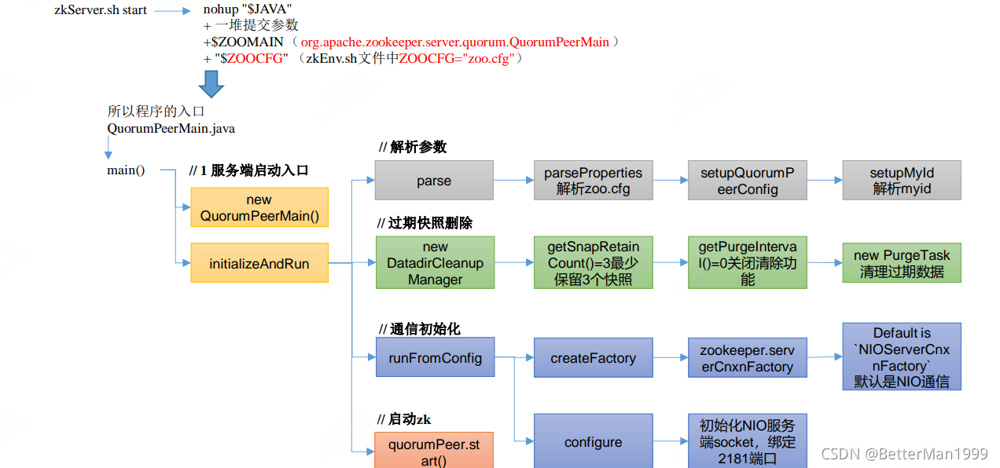
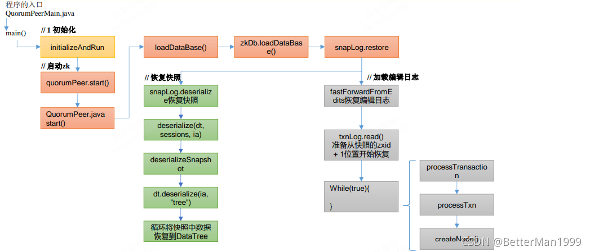

思考，Zookeeper是如何保证数据一致性的？
拜占庭将军问题是一个协议问题，拜占庭帝国军队的将军们必须全体一致的决定是否攻击某一支敌军。问题是这些将军在地理上是分隔开来的，并且将军中存在叛徒。
叛徒可以任意行动以达到以下目标：欺骗某些将军采取进攻行动；促成一个不是所有将军都同意的决定，如当将军们不希望进攻时促成进攻行动；或者迷惑某些将军，使他们无法做出决定。
如果叛徒达到了这些目的之一，则任何攻击行动的结果都是注定要失败的，只有完全达成一致的努力才能获得胜利。
Paxos算法：一种基于消息传递且具有高度容错特性的一致性算法。
Paxos算法解决的问题：如何快速正确的在一个分布式系统中对某个数据值达成一致，并且保证不论发生任何异常，都不会破坏整个系统的一致性。
Paxos算法描述：在一个Paxos系统中，首先将所有节点划分为Proposer（提议者），Acceptor（接受者），和Learner（学习者）每个节点都可以身兼数职。
一个完整的Paxos算法流程分为三个阶段：
Prepare准备阶段：
Proposer向多个Acceptor发出Propose请求Promise（承诺）。
Acceptor针对收到的Propose请求进行Promise（承诺）。
Accept接受阶段
Proposer收到多数Acceptor承诺的Promise后，向Acceptor发出Propose请求。
Acceptor针对收到的Propose请求进行Accept处理。
Learn学习阶段：Proposer将形成的决议发送给所有Learners。
Paxos算法流程：
1. Prepare: Proposer生成全局唯一且递增的Proposal ID，向所有Acceptor发送Propose请求，这里无需携带提案内容，只携带Proposal ID即可。
2. Promise: Acceptor收到Propose请求后，做出“两个承诺，一个应答”。
-> 不再接受Proposal ID小于等于（注意：这里是<= ）当前请求的Propose请求。
-> 不再接受Proposal ID小于（注意：这里是< ）当前请求的Accept请求。
-> 不违背以前做出的承诺下，回复已经Accept过的提案中ProposalID最大的那个提案的Value和ProposalID，没有则返回空值。
3. Proposer收到多数Acceptor的Promise应答后，从应答中选择Proposal ID最大的提案的Value，作为本次要发起的提案。如果所有应答的提案Value均为空值，则可以自己随意决定提案Value。然后携带当前Proposal ID，向所有Acceptor发送Propose请求。
4. Accept: Acceptor收到Propose请求后，在不违背自己之前做出的承诺下，接受并持久化当前Proposal ID和提案Value。
5. Learn: Proposer收到多数Acceptor的Accept后，决议形成，将形成的决议发送给所有Learner。
Zab借鉴了Paxos算法，是特别为Zookeeper设计的支持崩溃恢复的原子广播协议。基于该协议，Zookeeper设计为只有一台客户端（Leader）负责处理外部的写事务请求，然后Leader客户端将数据同步到其他Follower节点。即Zookeeper只有一个Leader可以发起提案。
Zab 协议内容：Zab 协议包括两种基本的模式：消息广播、崩溃恢复。
消息广播：
客户端发起一个写操作请求。
Leader服务器将客户端的请求转化为事务Proposal 提案，同时为每个Proposal 分配一个全局的ID，即zxid。
Leader服务器为每个Follower服务器分配一个单独的队列，然后将需要广播的 Proposal依次放到队列中去，并且根据FIFO策略进行消息发送。
Follower接收到Proposal后，会首先将其以事务日志的方式写入本地磁盘中，写入成功后向Leader反馈一个Ack响应消息。
Leader接收到超过半数以上Follower的Ack响应消息后，即认为消息发送成功，可以发送commit消息。
Leader向所有Follower广播commit消息，同时自身也会完成事务提交。Follower 接收到commit消息后，会将上一条事务提交。
Zookeeper采用Zab协议的核心，就是只要有一台服务器提交了Proposal，就要确保所有的服务器最终都能正确提交Proposal。
ZAB协议针对事务请求的处理过程类似于一个2PC提交过程：
广播事务阶段
广播提交操作
这两阶段提交模型如图，有可能因为Leader宕机带来数据不一致，比如：Leader发起一个事务Proposal1后就宕机 ， Follower都没有Proposal1；Leader收到半数ACK宕机，没来得及向Follower发送Commit。
数据不一致问题怎么解决？
ZAB引入了崩溃恢复模式，一旦Leader服务器出现崩溃或者由于网络原因导致Leader服务器失去了与过半 Follower的联系，那么就会进入崩溃恢复模式。
假设两种服务器异常情况：
假设一个事务在Leader提出之后，Leader挂了。
一个事务在Leader上提交了，并且过半的Follower都响应Ack了，但是Leader在Commit消息发出之前挂了。
Zab协议崩溃恢复要求满足以下两个要求：
确保已经被Leader提交的提案Proposal，必须最终被所有的Follower服务器提交。 （已经产生的提案，Follower必须执行）。
确保丢弃已经被Leader提出的，但是没有被提交的Proposal。（丢弃胎死腹中的提案）。
x- **崩溃恢复——Leader选举**：Leader选举和数据恢复。<img src=".assets/025.png" alt="025" style="zoom:80%;" />- Leader选举：根据上述要求，Zab协议需要保证选举出来的Leader需要满足以下条件：1. 新选举出来的Leader不能包含未提交的Proposal。即新Leader必须都是已经提交了Proposal的Follower服务器节点。2. 新选举的Leader节点中含有最大的zxid。这样做的好处是可以避免Leader服务器检查Proposal的提交和丢弃工作。- Zab如何数据同步：1. 完成Leader选举后，在正式开始工作之前（接收事务请求，然后提出新的Proposal），Leader服务器会首先确认事务日志中的所有的Proposal 是否已经被集群中过半的服务器Commit。2. Leader服务器需要确保所有的Follower服务器能够接收到每一条事务的Proposal，并且能将所有已经提交的事务Proposal应用到内存数据中。等到Follower将所有尚未同步的事务Proposal都从Leader服务器上同步过，并且应用到内存数据中以后，Leader才会把该Follower加入到真正可用的Follower列表中。
CAP理论：
一致性（C:Consistency）：在分布式环境中，一致性是指数据在多个副本之间是否能够保持数据一致的特性。在一致性的需求下，当一个系统在数据一致的状态下执行更新操作后，应该保证系统的数据仍然处于一致的状态。
可用性（A:Available）：可用性是指系统提供的服务必须一直处于可用的状态，对于用户的每一个操作请求总是能够在有限的时间内返回结果。
分区容错性（P:Partition Tolerance）：分布式系统在遇到任何网络分区故障的时候，仍然需要能够保证对外提供满足一致性和可用性的服务，除非是整个网络环境都发生了故障。
这三个基本需求，最多只能同时满足其中的两项，因为P是必须的，因此往往选择就在CP或者AP中。
ZooKeeper保证的是CP
ZooKeeper不能保证每次服务请求的可用性。（注：在极端环境下，ZooKeeper可能会丢弃一些请求，消费者程序需要重新请求才能获得结果）。所以说，ZooKeeper不能保证服务可用性。
进行Leader选举时集群都是不可用。
Leader 和 Follower 中的数据会在内存和磁盘中各保存一份。所以需要将内存中的数据持久化到磁盘中。
在 org.apache.zookeeper.server.persistence 包下的相关类都是序列化相关的代码。
快照
public interface SnapShot { // 反序列化方法 long deserialize(DataTree dt, Map<Long, Integer> sessions) throws IOException;
// 序列化方法 void serialize(DataTree dt, Map<Long, Integer> sessions, File name) throws IOException;
/** * find the most recent snapshot file * 查找最近的快照文件 */ File findMostRecentSnapshot() throws IOException;
// 释放资源 void close() throws IOException;}操作日志
public interface TxnLog { // 设置服务状态 void setServerStats(ServerStats serverStats);
// 滚动日志 void rollLog() throws IOException;
// 追加 boolean append(TxnHeader hdr, Record r) throws IOException;
// 读取数据 TxnIterator read(long zxid) throws IOException;
// 获取最后一个 zxid long getLastLoggedZxid() throws IOException;
// 删除日志 boolean truncate(long zxid) throws IOException;
// 获取 DbId long getDbId() throws IOException;
// 提交 void commit() throws IOException;
// 日志同步时间 long getTxnLogSyncElapsedTime();
// 关闭日志 void close() throws IOException;
// 读取日志的接口 public interface TxnIterator { // 获取头信息 TxnHeader getHeader();
// 获取传输的内容 Record getTxn();
// 下一条记录 boolean next() throws IOException;
// 关闭资源 void close() throws IOException;
// 获取存储的大小 long getStorageSize() throws IOException; }}处理持久化的核心类
zookeeper-jute 代码是关于 Zookeeper 序列化相关源码
序列化和反序列化方法
public interface Record { // 序列化方法 public void serialize(OutputArchive archive, String tag) throws IOException;
// 反序列化方法 public void deserialize(InputArchive archive, String tag) throws IOException;}
迭代
public interface Index { // 结束 public boolean done();
// 下一个 public void incr();}
序列化支持的数据类型
/** * Interface that alll the serializers have to implement. */public interface OutputArchive { public void writeByte(byte b, String tag) throws IOException;
public void writeBool(boolean b, String tag) throws IOException;
public void writeInt(int i, String tag) throws IOException;
public void writeLong(long l, String tag) throws IOException;
public void writeFloat(float f, String tag) throws IOException;
public void writeDouble(double d, String tag) throws IOException;
public void writeString(String s, String tag) throws IOException;
public void writeBuffer(byte buf[], String tag) throws IOException;
public void writeRecord(Record r, String tag) throws IOException;
public void startRecord(Record r, String tag) throws IOException;
public void endRecord(Record r, String tag) throws IOException;
public void startVector(List<?> v, String tag) throws IOException;
public void endVector(List<?> v, String tag) throws IOException;
public void startMap(TreeMap<?, ?> v, String tag) throws IOException;
public void endMap(TreeMap<?, ?> v, String tag) throws IOException;}反序列化支持的数据类型
/** * Interface that all the Deserializers have to implement. */public interface InputArchive { public byte readByte(String tag) throws IOException;
public boolean readBool(String tag) throws IOException;
public int readInt(String tag) throws IOException;
public long readLong(String tag) throws IOException;
public float readFloat(String tag) throws IOException;
public double readDouble(String tag) throws IOException;
public String readString(String tag) throws IOException;
public byte[] readBuffer(String tag) throws IOException;
public void readRecord(Record r, String tag) throws IOException;
public void startRecord(String tag) throws IOException;
public void endRecord(String tag) throws IOException;
public Index startVector(String tag) throws IOException;
public void endVector(String tag) throws IOException;
public Index startMap(String tag) throws IOException;
public void endMap(String tag) throws IOException;}
Zookeeper 服务的启动命令是 zkServer.sh start
# start.sh脚本# use POSTIX interface, symlink is followed automaticallyZOOBIN="${BASH_SOURCE-$0}"ZOOBIN="$(dirname "${ZOOBIN}")"ZOOBINDIR="$(cd "${ZOOBIN}"; pwd)"if [ -e "$ZOOBIN/../libexec/zkEnv.sh" ]; then . "$ZOOBINDIR"/../libexec/zkEnv.shelse. "$ZOOBINDIR"/zkEnv.sh //相当于获取 zkEnv.sh 中的环境变量（ZOOCFG="zoo.cfg"）fi# See the following page for extensive details on setting# up the JVM to accept JMX remote management:# http://java.sun.com/javase/6/docs/technotes/guides/management/agent.html# by default we allow local JMX connectionsif [ "x$JMXLOCALONLY" = "x" ]then JMXLOCALONLY=falsefiif [ "x$JMXDISABLE" = "x" ] || [ "$JMXDISABLE" = 'false' ]then echo "ZooKeeper JMX enabled by default" >&2 if [ "x$JMXPORT" = "x" ] then # for some reason these two options are necessary on jdk6 on Ubuntu # accord to the docs they are not necessary, but otw jconsole cannot # do a local attach ZOOMAIN="-Dcom.sun.management.jmxremote -Dcom.sun.management.jmxremote.local.only=$JMXLOCALONLY org.apache.zookeeper.server.quorum.QuorumPeerMain" else if [ "x$JMXAUTH" = "x" ] then JMXAUTH=false fi if [ "x$JMXSSL" = "x" ] then JMXSSL=false fi if [ "x$JMXLOG4J" = "x" ] then JMXLOG4J=true fi echo "ZooKeeper remote JMX Port set to $JMXPORT" >&2 echo "ZooKeeper remote JMX authenticate set to $JMXAUTH" >&2 echo "ZooKeeper remote JMX ssl set to $JMXSSL" >&2 echo "ZooKeeper remote JMX log4j set to $JMXLOG4J" >&2 ZOOMAIN="-Dcom.sun.management.jmxremote -Dcom.sun.management.jmxremote.port=$JMXPORT -Dcom.sun.management.jmxremote.authenticate=$JMXAUTH -Dcom.sun.management.jmxremote.ssl=$JMXSSL -Dzookeeper.jmx.log4j.disable=$JMXLOG4J org.apache.zookeeper.server.quorum.QuorumPeerMain" fielse echo "JMX disabled by user request" >&2 ZOOMAIN="org.apache.zookeeper.server.quorum.QuorumPeerMain"fiif [ "x$SERVER_JVMFLAGS" != "x" ]then JVMFLAGS="$SERVER_JVMFLAGS $JVMFLAGS"fi… …case $1 instart) echo -n "Starting zookeeper ... " if [ -f "$ZOOPIDFILE" ]; then if kill -0 `cat "$ZOOPIDFILE"` > /dev/null 2>&1; then echo $command already running as process `cat "$ZOOPIDFILE"`. exit 1 fi fi nohup "$JAVA" $ZOO_DATADIR_AUTOCREATE "-Dzookeeper.log.dir=${ZOO_LOG_DIR}" \ "-Dzookeeper.log.file=${ZOO_LOG_FILE}" "-Dzookeeper.root.logger=${ZOO_LOG4J_PROP}" \ -XX:+HeapDumpOnOutOfMemoryError -XX:OnOutOfMemoryError='kill -9 %p' \ -cp "$CLASSPATH" $JVMFLAGS $ZOOMAIN "$ZOOCFG" > "$_ZOO_DAEMON_OUT" 2>&1 < /dev/null & … … ;;stop) echo -n "Stopping zookeeper ... " if [ ! -f "$ZOOPIDFILE" ] then echo "no zookeeper to stop (could not find file $ZOOPIDFILE)" else $KILL $(cat "$ZOOPIDFILE") rm "$ZOOPIDFILE" sleep 1 echo STOPPED fi exit 0 ;;restart) shift "$0" stop ${@} sleep 3 "$0" start ${@} ;;status) … … ;;*) echo "Usage: $0 [--config <conf-dir>] {start|start-foreground|stop|restart|status|printcmd}" >&2esaczkServer.sh start 底层的实际执行内容
nohup "$JAVA" + 一堆提交参数+ $ZOOMAIN（org.apache.zookeeper.server.quorum.QuorumPeerMain）+ "$ZOOCFG" （zkEnv.sh 文件中 ZOOCFG="zoo.cfg"） 所以程序的入口是 QuorumPeerMain.java 类
QuorumPeerMain.java
public static void main(String[]args){ // 创建了一个 zk 节点 QuorumPeerMain main=new QuorumPeerMain(); try{ // 初始化节点并运行，args 相当于提交参数中的 zoo.cfg main.initializeAndRun(args); }catch(IllegalArgumentException e){ ...... } LOG.info("Exiting normally"); System.exit(0);}initializeAndRun
protected void initializeAndRun(String[] args) throws ConfigException, IOException, AdminServerException { // 管理 zk 的配置信息 QuorumPeerConfig config = new QuorumPeerConfig(); if (args.length == 1) { // 1 解析参数，zoo.cfg 和 myid config.parse(args[0]); } // 2 启动定时任务，对过期的快照，执行删除（默认该功能关闭） // Start and schedule the the purge task DatadirCleanupManager purgeMgr = new DatadirCleanupManager(config .getDataDir(), config.getDataLogDir(), config .getSnapRetainCount(), config.getPurgeInterval()); purgeMgr.start();
if (args.length == 1 && config.isDistributed()) { // 3 启动集群 runFromConfig(config); } else { LOG.warn("Either no config or no quorum defined in config, running " + " in standalone mode"); // there is only server in the quorum -- run as standalone ZooKeeperServerMain.main(args); }}QuorumPeerConfig.java
public void parse(String path) throws ConfigException { LOG.info("Reading configuration from: " + path);
try { // 校验文件路径及是否存在 File configFile = (new VerifyingFileFactory.Builder(LOG) .warnForRelativePath() .failForNonExistingPath() .build()).create(path);
Properties cfg = new Properties(); FileInputStream in = new FileInputStream(configFile); try { // 加载配置文件 cfg.load(in); configFileStr = path; } finally { in.close(); } // ---往下看--- // 解析配置文件 parseProperties(cfg); // ---end--- } catch (IOException e) { throw new ConfigException("Error processing " + path, e); } catch (IllegalArgumentException e) { throw new ConfigException("Error processing " + path, e); }
... ...}
QuorumPeerConfig#parseProperties：解析配置信息。
public void parseProperties(Properties zkProp) throws IOException, ConfigException { int clientPort = 0; int secureClientPort = 0; String clientPortAddress = null; String secureClientPortAddress = null; VerifyingFileFactory vff = new VerifyingFileFactory.Builder(LOG).warnForRelativePath().build(); // 读取 zoo.cfg 文件中的属性值，并赋值给 QuorumPeerConfig 的类对象 for (Entry<Object, Object> entry : zkProp.entrySet()) { String key = entry.getKey().toString().trim(); String value = entry.getValue().toString().trim(); if (key.equals("dataDir")) { dataDir = vff.create(value); } else if (key.equals("dataLogDir")) { dataLogDir = vff.create(value); } else if (key.equals("clientPort")) { clientPort = Integer.parseInt(value); } else if (key.equals("localSessionsEnabled")) { localSessionsEnabled = Boolean.parseBoolean(value); } else if (key.equals("localSessionsUpgradingEnabled")) { localSessionsUpgradingEnabled = Boolean.parseBoolean(value); } else if (key.equals("clientPortAddress")) { clientPortAddress = value.trim(); } else if (key.equals("secureClientPort")) { secureClientPort = Integer.parseInt(value); } else if (key.equals("secureClientPortAddress")) { secureClientPortAddress = value.trim(); } else if (key.equals("tickTime")) { tickTime = Integer.parseInt(value); } else if (key.equals("maxClientCnxns")) { maxClientCnxns = Integer.parseInt(value); } else if (key.equals("minSessionTimeout")) { minSessionTimeout = Integer.parseInt(value); } ... ... } ... ... if (dynamicConfigFileStr == null) { // ---往下看--- // 启动配置 setupQuorumPeerConfig(zkProp, true); // ---end--- if (isDistributed() && isReconfigEnabled()) { // we don't backup static config for standalone mode. // we also don't backup if reconfig feature is disabled. backupOldConfig(); } }}setupQuorumPeerConfig
void setupQuorumPeerConfig(Properties prop, boolean configBackwardCompatibilityMode) throws IOException, ConfigException { quorumVerifier = parseDynamicConfig(prop, electionAlg, true, configBackwardCompatibilityMode); // 设置启动id setupMyId(); // 设置端口号 setupClientPort(); // 设置类型 setupPeerType(); // 校验配置 checkValidity();}
// 设置启动idprivate void setupMyId() throws IOException { File myIdFile = new File(dataDir, "myid"); // standalone server doesn't need myid file. if (!myIdFile.isFile()) { return; } BufferedReader br = new BufferedReader(new FileReader(myIdFile)); String myIdString; try { myIdString = br.readLine(); } finally { br.close(); } try { // 将解析 myid 文件中的 id 赋值给 serverId serverId = Long.parseLong(myIdString); MDC.put("myid", myIdString); } catch (NumberFormatException e) { throw new IllegalArgumentException("serverid " + myIdString + " is not a number"); }}
可以启动定时任务，对过期的快照，执行删除。默认该功能时关闭的
protected void initializeAndRun(String[] args) throws ConfigException, IOException, AdminServerException {
// 管理 zk 的配置信息 QuorumPeerConfig config = new QuorumPeerConfig(); if (args.length == 1) { // 1 解析参数，zoo.cfg 和 myid config.parse(args[0]); } // 2 启动定时任务，对过期的快照，执行删除（默认是关闭） // config.getSnapRetainCount() = 3 最少保留的快照个数 // config.getPurgeInterval() = 0 默认 0 表示关闭 // Start and schedule the the purge task DatadirCleanupManager purgeMgr = new DatadirCleanupManager(config .getDataDir(), config.getDataLogDir(), config .getSnapRetainCount(), config.getPurgeInterval()); // 启动 purgeMgr.start(); if (args.length == 1 && config.isDistributed()) { // 3 启动集群 runFromConfig(config); } else { LOG.warn("Either no config or no quorum defined in config, running " + " in standalone mode"); // there is only server in the quorum -- run as standalone ZooKeeperServerMain.main(args); }}
protected int snapRetainCount = 3;protected int purgeInterval = 0;
// 启动public void start() { if (PurgeTaskStatus.STARTED == purgeTaskStatus) { LOG.warn("Purge task is already running."); return; } // 默认情况 purgeInterval=0，该任务关闭，直接返回 // Don't schedule the purge task with zero or negative purge interval. if (purgeInterval <= 0) { LOG.info("Purge task is not scheduled."); return; } // 创建一个定时器 timer = new Timer("PurgeTask", true); // 创建一个清理快照任务 TimerTask task = new PurgeTask(dataLogDir, snapDir, snapRetainCount); // 如果 purgeInterval 设置的值是 1，表示 1 小时检查一次，判断是否有过期快照，有则删除 timer.scheduleAtFixedRate(task, 0, TimeUnit.HOURS.toMillis(purgeInterval)); purgeTaskStatus = PurgeTaskStatus.STARTED;}
/** * Purage 任务 */static class PurgeTask extends TimerTask { private File logsDir; private File snapsDir; private int snapRetainCount;
public PurgeTask(File dataDir, File snapDir, int count) { logsDir = dataDir; snapsDir = snapDir; snapRetainCount = count; }
public void run() { LOG.info("Purge task started."); try { // 清理过期的数据 PurgeTxnLog.purge(logsDir, snapsDir, snapRetainCount); } catch (Exception e) { LOG.error("Error occurred while purging.", e); } LOG.info("Purge task completed."); }}
public static void purge(File dataDir, File snapDir, int num) throws IOException { if (num < 3) { throw new IllegalArgumentException(COUNT_ERR_MSG); } FileTxnSnapLog txnLog = new FileTxnSnapLog(dataDir, snapDir); List<File> snaps = txnLog.findNRecentSnapshots(num); int numSnaps = snaps.size(); if (numSnaps > 0) { purgeOlderSnapshots(txnLog, snaps.get(numSnaps - 1)); }}
protected void initializeAndRun(String[] args) throws ConfigException, IOException, AdminServerException { // 管理 zk 的配置信息 QuorumPeerConfig config = new QuorumPeerConfig(); if (args.length == 1) { // 1 解析参数，zoo.cfg 和 myid config.parse(args[0]); } // 2 启动定时任务，对过期的快照，执行删除（默认是关闭） // config.getSnapRetainCount() = 3 最少保留的快照个数 // config.getPurgeInterval() = 0 默认 0 表示关闭 // Start and schedule the the purge task DatadirCleanupManager purgeMgr = new DatadirCleanupManager(config .getDataDir(), config.getDataLogDir(), config .getSnapRetainCount(), config.getPurgeInterval()); purgeMgr.start(); if (args.length == 1 && config.isDistributed()) { // 3 启动集群（集群模式） runFromConfig(config); } else { LOG.warn("Either no config or no quorum defined in config, running " + " in standalone mode"); // there is only server in the quorum -- run as standalone // 本地模式 ZooKeeperServerMain.main(args); }}
通信协议默认 NIO（可以支持 Netty）
public void runFromConfig(QuorumPeerConfig config) throws IOException, AdminServerException {
......
LOG.info("Starting quorum peer"); try { ServerCnxnFactory cnxnFactory = null; ServerCnxnFactory secureCnxnFactory = null; // 通信组件初始化，默认是 NIO 通信 if (config.getClientPortAddress() != null) { cnxnFactory = ServerCnxnFactory.createFactory(); cnxnFactory.configure(config.getClientPortAddress(), config.getMaxClientCnxns(), false); } if (config.getSecureClientPortAddress() != null) { secureCnxnFactory = ServerCnxnFactory.createFactory(); secureCnxnFactory.configure(config.getSecureClientPortAddress(), config.getMaxClientCnxns(), true); } // 把解析的参数赋值给该 zookeeper 节点 quorumPeer = getQuorumPeer(); quorumPeer.setTxnFactory(new FileTxnSnapLog( config.getDataLogDir(), config.getDataDir())); quorumPeer.enableLocalSessions(config.areLocalSessionsEnabled()); quorumPeer.enableLocalSessionsUpgrading( config.isLocalSessionsUpgradingEnabled()); //quorumPeer.setQuorumPeers(config.getAllMembers()); quorumPeer.setElectionType(config.getElectionAlg()); quorumPeer.setMyid(config.getServerId()); quorumPeer.setTickTime(config.getTickTime()); quorumPeer.setMinSessionTimeout(config.getMinSessionTimeout()); quorumPeer.setMaxSessionTimeout(config.getMaxSessionTimeout()); quorumPeer.setInitLimit(config.getInitLimit()); quorumPeer.setSyncLimit(config.getSyncLimit()); quorumPeer.setConfigFileName(config.getConfigFilename()); // 管理 zk 数据的存储 quorumPeer.setZKDatabase(new ZKDatabase(quorumPeer.getTxnFactory())); quorumPeer.setQuorumVerifier(config.getQuorumVerifier(), false); if (config.getLastSeenQuorumVerifier() != null) { quorumPeer.setLastSeenQuorumVerifier(config.getLastSeenQuorumVerifier(), false); } quorumPeer.initConfigInZKDatabase(); // 管理 zk 的通信 quorumPeer.setCnxnFactory(cnxnFactory); quorumPeer.setSecureCnxnFactory(secureCnxnFactory); quorumPeer.setSslQuorum(config.isSslQuorum()); quorumPeer.setUsePortUnification(config.shouldUsePortUnification()); quorumPeer.setLearnerType(config.getPeerType()); quorumPeer.setSyncEnabled(config.getSyncEnabled()); quorumPeer.setQuorumListenOnAllIPs(config.getQuorumListenOnAllIPs()); if (config.sslQuorumReloadCertFiles) { quorumPeer.getX509Util().enableCertFileReloading(); }
......
quorumPeer.setQuorumCnxnThreadsSize(config.quorumCnxnThreadsSize); quorumPeer.initialize();
// 启动 zk quorumPeer.start(); quorumPeer.join(); } catch (InterruptedException e) { // warn, but generally this is ok LOG.warn("Quorum Peer interrupted", e); }}
static public ServerCnxnFactory createFactory() throws IOException { String serverCnxnFactoryName = System.getProperty(ZOOKEEPER_SERVER_CNXN_FACTORY); if (serverCnxnFactoryName == null) { serverCnxnFactoryName = NIOServerCnxnFactory.class.getName(); } try { ServerCnxnFactory serverCnxnFactory = (ServerCnxnFactory) Class.forName(serverCnxnFactoryName) .getDeclaredConstructor().newInstance(); LOG.info("Using {} as server connection factory", serverCnxnFactoryName); return serverCnxnFactory; } catch (Exception e) { IOException ioe = new IOException("Couldn't instantiate " + serverCnxnFactoryName); ioe.initCause(e); throw ioe; }}
public static final String ZOOKEEPER_SERVER_CNXN_FACTORY = "zookeeper.serverCnxnFactory";
初始化 NIO 服务端 Socket（并未启动）
// NIOServerCnxnFactory.javapublic void configure(InetSocketAddress addr, int maxcc, boolean secure) throws IOException { if (secure) { throw new UnsupportedOperationException("SSL isn't supported in NIOServerCnxn"); } configureSaslLogin(); maxClientCnxns = maxcc; sessionlessCnxnTimeout = Integer.getInteger( ZOOKEEPER_NIO_SESSIONLESS_CNXN_TIMEOUT, 10000); // We also use the sessionlessCnxnTimeout as expiring interval for // cnxnExpiryQueue. These don't need to be the same, but the expiring // interval passed into the ExpiryQueue() constructor below should be // less than or equal to the timeout. cnxnExpiryQueue = new ExpiryQueue<NIOServerCnxn>(sessionlessCnxnTimeout); expirerThread = new ConnectionExpirerThread(); int numCores = Runtime.getRuntime().availableProcessors(); // 32 cores sweet spot seems to be 4 selector threads numSelectorThreads = Integer.getInteger( ZOOKEEPER_NIO_NUM_SELECTOR_THREADS, Math.max((int) Math.sqrt((float) numCores / 2), 1)); if (numSelectorThreads < 1) { throw new IOException("numSelectorThreads must be at least 1"); } numWorkerThreads = Integer.getInteger( ZOOKEEPER_NIO_NUM_WORKER_THREADS, 2 * numCores); workerShutdownTimeoutMS = Long.getLong( ZOOKEEPER_NIO_SHUTDOWN_TIMEOUT, 5000);
... ...
for (int i = 0; i < numSelectorThreads; ++i) { selectorThreads.add(new SelectorThread(i)); }// 初始化 NIO 服务端 socket，绑定 2181 端口，可以接收客户端请求 this.ss = ServerSocketChannel.open(); ss.socket().setReuseAddress(true); LOG.info("binding to port " + addr);// 绑定 2181 端口 ss.socket().bind(addr); ss.configureBlocking(false); acceptThread = new AcceptThread(ss, addr, selectorThreads);}
zk 中的数据模型，是一棵树，DataTree，每个节点，叫做DataNode。
zk 集群中的 DataTree 时刻保持状态同步
Zookeeper 集群中每个 zk 节点中，数据在内存和磁盘中都有一份完整的数据。
内存数据：DataTree。
磁盘数据：快照文件 + 编辑日志。

冷启动数据恢复快照数据：
启动集群：
public void runFromConfig(QuorumPeerConfig config)throws IOException, AdminServerException {......LOG.info("Starting quorum peer");try {ServerCnxnFactory cnxnFactory = null;ServerCnxnFactory secureCnxnFactory = null;// 通信组件初始化，默认是 NIO 通信if (config.getClientPortAddress() != null) {cnxnFactory = ServerCnxnFactory.createFactory();cnxnFactory.configure(config.getClientPortAddress(),config.getMaxClientCnxns(), false);}if (config.getSecureClientPortAddress() != null) {secureCnxnFactory = ServerCnxnFactory.createFactory();secureCnxnFactory.configure(config.getSecureClientPortAddress(),config.getMaxClientCnxns(), true);}// 把解析的参数赋值给该 Zookeeper 节点quorumPeer = getQuorumPeer();quorumPeer.setTxnFactory(new FileTxnSnapLog(config.getDataLogDir(),config.getDataDir()));quorumPeer.enableLocalSessions(config.areLocalSessionsEnabled());quorumPeer.enableLocalSessionsUpgrading(config.isLocalSessionsUpgradingEnabled());//quorumPeer.setQuorumPeers(config.getAllMembers());quorumPeer.setElectionType(config.getElectionAlg());quorumPeer.setMyid(config.getServerId());quorumPeer.setTickTime(config.getTickTime());quorumPeer.setMinSessionTimeout(config.getMinSessionTimeout());quorumPeer.setMaxSessionTimeout(config.getMaxSessionTimeout());quorumPeer.setInitLimit(config.getInitLimit());quorumPeer.setSyncLimit(config.getSyncLimit());quorumPeer.setConfigFileName(config.getConfigFilename());// 管理 zk 数据的存储quorumPeer.setZKDatabase(new ZKDatabase(quorumPeer.getTxnFactory()));quorumPeer.setQuorumVerifier(config.getQuorumVerifier(), false);if (config.getLastSeenQuorumVerifier() != null) {quorumPeer.setLastSeenQuorumVerifier(config.getLastSeenQuorumVerifier(),false);}quorumPeer.initConfigInZKDatabase();// 管理 zk 的通信quorumPeer.setCnxnFactory(cnxnFactory);quorumPeer.setSecureCnxnFactory(secureCnxnFactory);quorumPeer.setSslQuorum(config.isSslQuorum());quorumPeer.setUsePortUnification(config.shouldUsePortUnification());quorumPeer.setLearnerType(config.getPeerType());quorumPeer.setSyncEnabled(config.getSyncEnabled());quorumPeer.setQuorumListenOnAllIPs(config.getQuorumListenOnAllIPs());if (config.sslQuorumReloadCertFiles) {quorumPeer.getX509Util().enableCertFileReloading();}quorumPeer.setQuorumCnxnThreadsSize(config.quorumCnxnThreadsSize);quorumPeer.initialize();// 启动 zkquorumPeer.start();quorumPeer.join();} catch (InterruptedException e) {// warn, but generally this is okLOG.warn("Quorum Peer interrupted", e);}}
冷启动恢复数据
// QuorumPeer.javapublic synchronized void start() {if (!getView().containsKey(myid)) {throw new RuntimeException("My id " + myid + " not in the peer list");}// ---往下看---// 冷启动数据恢复loadDataBase();// ---end---startServerCnxnFactory();try {// 启动通信工厂实例对象adminServer.start();} catch (AdminServerException e) {LOG.warn("Problem starting AdminServer", e);System.out.println(e);}// 准备选举环境startLeaderElection();// 执行选举super.start();}
loadDataBase
private void loadDataBase() {try {// 加载磁盘数据到内存，恢复 DataTree// zk 的操作分两种：事务操作和非事务操作// 事务操作：zk.cteate()；都会被分配一个全局唯一的 zxid，zxid 组成：64 位：//（前 32 位：epoch 每个 leader 任期的代号；后 32 位：txid 为事务 id）// 非事务操作：zk.getData()// 数据恢复过程：// （1）从快照文件中恢复大部分数据，并得到一个 lastProcessZXid// （2）再从编辑日志中执行 replay，执行到最后一条日志并更新 lastProcessZXid// （3）最终得到，datatree 和 lastProcessZXid，表示数据恢复完成zkDb.loadDataBase();// load the epochslong lastProcessedZxid = zkDb.getDataTree().lastProcessedZxid;long epochOfZxid = ZxidUtils.getEpochFromZxid(lastProcessedZxid);try {currentEpoch = readLongFromFile(CURRENT_EPOCH_FILENAME);} catch (FileNotFoundException e) {// pick a reasonable epoch number// this should only happen once when moving to a// new code versioncurrentEpoch = epochOfZxid;LOG.info(CURRENT_EPOCH_FILENAME+ " not found! Creating with a reasonable default of {}. This shouldonly happen when you are upgrading your installation",currentEpoch);writeLongToFile(CURRENT_EPOCH_FILENAME, currentEpoch);}if (epochOfZxid > currentEpoch) {throw new IOException("The current epoch, " +ZxidUtils.zxidToString(currentEpoch) + ", is older than the last zxid, " + lastProcessedZxid);}try {acceptedEpoch = readLongFromFile(ACCEPTED_EPOCH_FILENAME);} catch (FileNotFoundException e) {// pick a reasonable epoch number// this should only happen once when moving to a// new code versionacceptedEpoch = epochOfZxid;LOG.info(ACCEPTED_EPOCH_FILENAME+ " not found! Creating with a reasonable default of {}. This shouldonly happen when you are upgrading your installation",acceptedEpoch);writeLongToFile(ACCEPTED_EPOCH_FILENAME, acceptedEpoch);}if (acceptedEpoch < currentEpoch) {throw new IOException("The accepted epoch, " +ZxidUtils.zxidToString(acceptedEpoch) + " is less than the current epoch, " +ZxidUtils.zxidToString(currentEpoch));}} catch (IOException ie) {LOG.error("Unable to load database on disk", ie);throw new RuntimeException("Unable to run quorum server ", ie);}}// 加载数据public long loadDataBase() throws IOException {long zxid = snapLog.restore(dataTree, sessionsWithTimeouts,commitProposalPlaybackListener);initialized = true;return zxid;}// 重新加载public long restore(DataTree dt, Map<Long, Integer> sessions,PlayBackListener listener) throws IOException {// 恢复快照文件数据到 DataTreelong deserializeResult = snapLog.deserialize(dt, sessions);FileTxnLog txnLog = new FileTxnLog(dataDir);RestoreFinalizer finalizer = () -> {// 恢复编辑日志数据到 DataTreelong highestZxid = fastForwardFromEdits(dt, sessions, listener);return highestZxid;};if (-1L == deserializeResult) {/* this means that we couldn't find any snapshot, so we need to* initialize an empty database (reported in ZOOKEEPER-2325) */if (txnLog.getLastLoggedZxid() != -1) {// ZOOKEEPER-3056: provides an escape hatch for users upgrading// from old versions of zookeeper (3.4.x, pre 3.5.3).if (!trustEmptySnapshot) {throw new IOException(EMPTY_SNAPSHOT_WARNING +"Something is broken!");} else {LOG.warn("{}This should only be allowed during upgrading.",EMPTY_SNAPSHOT_WARNING);return finalizer.run();}}/* TODO: (br33d) we should either put a ConcurrentHashMap on restore()* or use Map on save() */save(dt, (ConcurrentHashMap<Long, Integer>) sessions);/* return a zxid of zero, since we the database is empty */return 0;}return finalizer.run();}
deserialize 实现类
// FileSnap.javapublic long deserialize(DataTree dt, Map<Long, Integer> sessions)throws IOException {// we run through 100 snapshots (not all of them)// if we cannot get it running within 100 snapshots// we should give upList<File> snapList = findNValidSnapshots(100);if (snapList.size() == 0) {return -1L;}File snap = null;boolean foundValid = false;// 依次遍历每一个快照的数据for (int i = 0, snapListSize = snapList.size(); i < snapListSize; i++) {snap = snapList.get(i);LOG.info("Reading snapshot " + snap);// 反序列化环境准备try (InputStream snapIS = new BufferedInputStream(new FileInputStream(snap));CheckedInputStream crcIn = new CheckedInputStream(snapIS, newAdler32())) {InputArchive ia = BinaryInputArchive.getArchive(crcIn);// 反序列化，恢复数据到 DataTreedeserialize(dt, sessions, ia);long checkSum = crcIn.getChecksum().getValue();long val = ia.readLong("val");if (val != checkSum) {throw new IOException("CRC corruption in snapshot : " + snap);}foundValid = true;break;} catch (IOException e) {LOG.warn("problem reading snap file " + snap, e);}}if (!foundValid) {throw new IOException("Not able to find valid snapshots in " + snapDir);}dt.lastProcessedZxid = Util.getZxidFromName(snap.getName(),SNAPSHOT_FILE_PREFIX);return dt.lastProcessedZxid;}public void deserialize(DataTree dt, Map<Long, Integer> sessions,InputArchive ia) throws IOException {FileHeader header = new FileHeader();header.deserialize(ia, "fileheader");if (header.getMagic() != SNAP_MAGIC) {throw new IOException("mismatching magic headers "+ header.getMagic() +" != " + FileSnap.SNAP_MAGIC);}// 恢复快照数据到 DataTreeSerializeUtils.deserializeSnapshot(dt, ia, sessions);}public static void deserializeSnapshot(DataTree dt, InputArchive ia,Map<Long, Integer> sessions) throws IOException {int count = ia.readInt("count");while (count > 0) {long id = ia.readLong("id");int to = ia.readInt("timeout");sessions.put(id, to);if (LOG.isTraceEnabled()) {ZooTrace.logTraceMessage(LOG, ZooTrace.SESSION_TRACE_MASK,"loadData --- session in archive: " + id+ " with timeout: " + to);}count--;}// 恢复快照数据到 DataTreedt.deserialize(ia, "tree");}public void deserialize(InputArchive ia, String tag) throws IOException {aclCache.deserialize(ia);nodes.clear();pTrie.clear();String path = ia.readString("path");// 从快照中恢复每一个 datanode 节点数据到 DataTreewhile (!"/".equals(path)) {// 每次循环创建一个节点对象DataNode node = new DataNode();ia.readRecord(node, "node");// 将 DataNode 恢复到 DataTreenodes.put(path, node);synchronized (node) {aclCache.addUsage(node.acl);}int lastSlash = path.lastIndexOf('/');if (lastSlash == -1) {root = node;} else {// 处理父节点String parentPath = path.substring(0, lastSlash);DataNode parent = nodes.get(parentPath);if (parent == null) {throw new IOException("Invalid Datatree, unable to find " +"parent " + parentPath + " of path " + path);}// 处理子节点parent.addChild(path.substring(lastSlash + 1));// 处理临时节点和永久节点long eowner = node.stat.getEphemeralOwner();EphemeralType ephemeralType = EphemeralType.get(eowner);if (ephemeralType == EphemeralType.CONTAINER) {containers.add(path);} else if (ephemeralType == EphemeralType.TTL) {ttls.add(path);} else if (eowner != 0) {HashSet<String> list = ephemerals.get(eowner);if (list == null) {list = new HashSet<String>();ephemerals.put(eowner, list);}list.add(path);}}path = ia.readString("path");}nodes.put("/", root);// we are done with deserializing the// the datatree// update the quotas - create path trie// and also update the stat nodessetupQuota();aclCache.purgeUnused();}
冷启动数据恢复编辑日志
// FileTxnSnapLog.java 类中的 restore 方法public long restore(DataTree dt, Map<Long, Integer> sessions, PlayBackListener listener) throws IOException {// 恢复快照文件数据到 DataTree long deserializeResult = snapLog.deserialize(dt, sessions); FileTxnLog txnLog = new FileTxnLog(dataDir); RestoreFinalizer finalizer = () -> { // 恢复编辑日志数据到 DataTree long highestZxid = fastForwardFromEdits(dt, sessions, listener); return highestZxid; };... ... return finalizer.run();}
public long fastForwardFromEdits(DataTree dt, Map<Long, Integer> sessions, PlayBackListener listener) throws IOException {// 在此之前，已经从快照文件中恢复了大部分数据，接下来只需从快照的 zxid + 1位置开始恢复 TxnIterator itr = txnLog.read(dt.lastProcessedZxid + 1);// 快照中最大的 zxid，在执行编辑日志时，这个值会不断更新，直到所有操作执行完 long highestZxid = dt.lastProcessedZxid; TxnHeader hdr; try { // 从 lastProcessedZxid 事务编号器开始，不断的从编辑日志中恢复剩下的还没有恢复的数据 while (true) { // iterator points to // the first valid txn when initialized // 获取事务头信息（有 zxid） hdr = itr.getHeader(); if (hdr == null) { //empty logs return dt.lastProcessedZxid; } if (hdr.getZxid() < highestZxid && highestZxid != 0) { LOG.error("{}(highestZxid) > {}(next log) for type {}", highestZxid, hdr.getZxid(), hdr.getType()); } else { highestZxid = hdr.getZxid(); } try { // 根据编辑日志恢复数据到 DataTree，每执行一次，对应的事务 id， highestZxid + 1 processTransaction(hdr, dt, sessions, itr.getTxn()); } catch (KeeperException.NoNodeException e) { throw new IOException("Failed to process transaction type: " + hdr.getType() + " error: " + e.getMessage(), e); } listener.onTxnLoaded(hdr, itr.getTxn()); if (!itr.next()) break; } } finally { if (itr != null) { itr.close(); } } return highestZxid;}
public void processTransaction(TxnHeader hdr, DataTree dt, Map<Long, Integer> sessions, Record txn) throws KeeperException.NoNodeException { ProcessTxnResult rc; switch (hdr.getType()) { case OpCode.createSession: sessions.put(hdr.getClientId(), ((CreateSessionTxn) txn).getTimeOut()); if (LOG.isTraceEnabled()) { ZooTrace.logTraceMessage(LOG, ZooTrace.SESSION_TRACE_MASK, "playLog --- create session in log: 0x" + Long.toHexString(hdr.getClientId()) + " with timeout: " + ((CreateSessionTxn) txn).getTimeOut()); } // give dataTree a chance to sync its lastProcessedZxid rc = dt.processTxn(hdr, txn); break; case OpCode.closeSession: sessions.remove(hdr.getClientId()); if (LOG.isTraceEnabled()) { ZooTrace.logTraceMessage(LOG, ZooTrace.SESSION_TRACE_MASK, "playLog --- close session in log: 0x" + Long.toHexString(hdr.getClientId())); } rc = dt.processTxn(hdr, txn); break; default: // 创建节点、删除节点和其他的各种事务操作等 rc = dt.processTxn(hdr, txn); } /** * Snapshots are lazily created. So when a snapshot is in progress, * there is a chance for later transactions to make into the * snapshot. Then when the snapshot is restored, NONODE/NODEEXISTS * errors could occur. It should be safe to ignore these. */ if (rc.err != Code.OK.intValue()) { LOG.debug( "Ignoring processTxn failure hdr: {}, error: {}, path: {}", hdr.getType(), rc.err, rc.path); }}
public ProcessTxnResult processTxn(TxnHeader header, Record txn, boolean isSubTxn) { ProcessTxnResult rc = new ProcessTxnResult(); try { rc.clientId = header.getClientId(); rc.cxid = header.getCxid(); rc.zxid = header.getZxid(); rc.type = header.getType(); rc.err = 0; rc.multiResult = null; switch (header.getType()) { case OpCode.create: CreateTxn createTxn = (CreateTxn) txn; rc.path = createTxn.getPath(); createNode( createTxn.getPath(), createTxn.getData(), createTxn.getAcl(), createTxn.getEphemeral() ? header.getClientId() : 0, createTxn.getParentCVersion(), header.getZxid(), header.getTime(), null); break; case OpCode.create2: CreateTxn create2Txn = (CreateTxn) txn; rc.path = create2Txn.getPath(); Stat stat = new Stat(); createNode( create2Txn.getPath(), create2Txn.getData(), create2Txn.getAcl(), create2Txn.getEphemeral() ? header.getClientId() : 0, create2Txn.getParentCVersion(), header.getZxid(), header.getTime(), stat); rc.stat = stat; break; case OpCode.createTTL: CreateTTLTxn createTtlTxn = (CreateTTLTxn) txn; rc.path = createTtlTxn.getPath(); stat = new Stat(); createNode( createTtlTxn.getPath(), createTtlTxn.getData(), createTtlTxn.getAcl(), EphemeralType.TTL.toEphemeralOwner(createTtlTxn.getTtl()), createTtlTxn.getParentCVersion(), header.getZxid(), header.getTime(), stat); rc.stat = stat; break; case OpCode.createContainer: CreateContainerTxn createContainerTxn = (CreateContainerTxn) txn; rc.path = createContainerTxn.getPath(); stat = new Stat(); createNode( createContainerTxn.getPath(), createContainerTxn.getData(), createContainerTxn.getAcl(), EphemeralType.CONTAINER_EPHEMERAL_OWNER, createContainerTxn.getParentCVersion(), header.getZxid(), header.getTime(), stat); rc.stat = stat; break; case OpCode.delete: case OpCode.deleteContainer: DeleteTxn deleteTxn = (DeleteTxn) txn; rc.path = deleteTxn.getPath(); deleteNode(deleteTxn.getPath(), header.getZxid()); break; case OpCode.reconfig: case OpCode.setData: SetDataTxn setDataTxn = (SetDataTxn) txn; rc.path = setDataTxn.getPath(); rc.stat = setData(setDataTxn.getPath(), setDataTxn .getData(), setDataTxn.getVersion(), header .getZxid(), header.getTime()); break; case OpCode.setACL: SetACLTxn setACLTxn = (SetACLTxn) txn; rc.path = setACLTxn.getPath(); rc.stat = setACL(setACLTxn.getPath(), setACLTxn.getAcl(), setACLTxn.getVersion()); break; case OpCode.closeSession: killSession(header.getClientId(), header.getZxid()); break; case OpCode.error: ErrorTxn errTxn = (ErrorTxn) txn; rc.err = errTxn.getErr(); break; case OpCode.check: CheckVersionTxn checkTxn = (CheckVersionTxn) txn; rc.path = checkTxn.getPath(); break; case OpCode.multi: MultiTxn multiTxn = (MultiTxn) txn; List<Txn> txns = multiTxn.getTxns(); rc.multiResult = new ArrayList<ProcessTxnResult>(); boolean failed = false; for (Txn subtxn : txns) { if (subtxn.getType() == OpCode.error) { failed = true; break; } }... ... } } catch (KeeperException e) {... ... } catch (IOException e) {... ... }... ... return rc;}
Zookeeper选举机制——第一次启动
服务器1启动，发起一次选举。服务器1投自己一票。此时服务器1票数一票，不够半数以上（3票），选举无法完成，服务器1状态保持为LOOKING；
服务器2启动，再发起一次选举。服务器1和2分别投自己一票并交换选票信息：此时服务器1发现服务器2的myid比自己目前投票推举的（服务器1）大，更改选票为推举服务器2。此时服务器1票数0票，服务器2票数2票，没有半数以上结果，选举无法完成，服务器1，2状态保持LOOKING;
服务器3启动，发起一次选举。此时服务器1和2都会更改选票为服务器3。此次投票结果：服务器1为0票，服务器2为0票，服务器3为3票。此时服务器3的票数已经超过半数，服务器3当选Leader。服务器1，2更改状态为FOLLOWING，服务器3更改状态为LEADING；
服务器4启动，发起一次选举。此时服务器1，2，3已经不是LOOKING状态，不会更改选票信息。交换选票信息结果：服务器3为3票，服务器4为1票。此时服务器4服从多数，更改选票信息为服务器3，并更改状态为FOLLOWING；
服务器5启动，同4一样。
Zookeeper选举机制——非第一次启动
当ZooKeeper集群中的一台服务器出现以下两种情况之一时，就会开始进入Leader选举：
服务器初始化启动。
服务器运行期间无法和Leader保持连接。
而当一台机器进入Leader选举流程时，当前集群也可能会处于以下两种状态：
集群中本来就已经存在一个Leader。 对于第一种已经存在Leader的情况，机器试图去选举Leader时，会被告知当前服务器的Leader信息，对于该机器来说，仅仅需要和Leader机器建立连接，并进行状态同步即可。
集群中确实不存在Leader。 假设ZooKeeper由5台服务器组成，SID分别为1、2、3、4、5，ZXID分别为8、8、8、7、7，并且此时SID为3的服务器是Leader。某一时刻，3和5服务器出现故障，因此开始进行Leader选举。
SID为1、2、4的机器投票情况：
| （EPOCH，ZXID，SID ） | （EPOCH，ZXID，SID ） | （EPOCH，ZXID，SID ） |
|---|---|---|
| （1，8，1） | （1，8，2） | （1，7，4） |
选举Leader规则： ①EPOCH大的直接胜出 ②EPOCH相同，事务id大的胜出 ③事务id相同，服务器id大的胜出
start开始选举
public synchronized void start() {if (!getView().containsKey(myid)) {throw new RuntimeException("My id " + myid + " not in the peer list");}loadDataBase();startServerCnxnFactory();try {adminServer.start();} catch (AdminServerException e) {LOG.warn("Problem starting AdminServer", e);System.out.println(e);}// 选举准备startLeaderElection();super.start();}// 同步选举节点synchronized public void startLeaderElection() {try {if (getPeerState() == ServerState.LOOKING) {// 创建选票// （1）选票组件：epoch（leader 的任期代号）、zxid（某个leader 当选期间执行的事务编号）、myid（serverid）// （2）开始选票时，都是先投自己currentVote = new Vote(myid, getLastLoggedZxid(), getCurrentEpoch());}} catch (IOException e) {RuntimeException re = new RuntimeException(e.getMessage());re.setStackTrace(e.getStackTrace());throw re;}// if (!getView().containsKey(myid)) {// throw new RuntimeException("My id " + myid + " not in the peer list");//}if (electionType == 0) {try {udpSocket = new DatagramSocket(getQuorumAddress().getPort());responder = new ResponderThread();responder.start();} catch (SocketException e) {throw new RuntimeException(e);}}// 创建选举算法实例this.electionAlg = createElectionAlgorithm(electionType);}// 创建选票protected Election createElectionAlgorithm(int electionAlgorithm) {Election le = null;//TODO: use a factory rather than a switchswitch (electionAlgorithm) {case 0:le = new LeaderElection(this);break;case 1:le = new AuthFastLeaderElection(this);break;case 2:le = new AuthFastLeaderElection(this, true);break;case 3:// 1 创建 QuorumCnxnManager，负责选举过程中的所有网络通信QuorumCnxManager qcm = createCnxnManager();QuorumCnxManager oldQcm = qcmRef.getAndSet(qcm);if (oldQcm != null) {LOG.warn("Clobbering already-set QuorumCnxManager (restarting leaderelection ?) ");oldQcm.halt();}QuorumCnxManager.Listener listener = qcm.listener;if (listener != null) {// 2 启动监听线程listener.start();// 3 准备开始选举FastLeaderElection fle = new FastLeaderElection(this, qcm);fle.start();le = fle;} else {LOG.error("Null listener when initializing cnx manager");}break;default:assert false;}return le;}
网络通信组件初始化：
public QuorumCnxManager createCnxnManager() {return new QuorumCnxManager(this,this.getId(),this.getView(),this.authServer,this.authLearner,this.tickTime * this.syncLimit,this.getQuorumListenOnAllIPs(),this.quorumCnxnThreadsSize,this.isQuorumSaslAuthEnabled());}public QuorumCnxManager(QuorumPeer self,final long mySid,Map<Long, QuorumPeer.QuorumServer> view,QuorumAuthServer authServer,QuorumAuthLearner authLearner,int socketTimeout,boolean listenOnAllIPs,int quorumCnxnThreadsSize,boolean quorumSaslAuthEnabled) {// 创建各种队列this.recvQueue = new ArrayBlockingQueue<Message>(RECV_CAPACITY);this.queueSendMap = new ConcurrentHashMap<Long,ArrayBlockingQueue<ByteBuffer>>();this.senderWorkerMap = new ConcurrentHashMap<Long, SendWorker>();this.lastMessageSent = new ConcurrentHashMap<Long, ByteBuffer>();String cnxToValue = System.getProperty("zookeeper.cnxTimeout");if (cnxToValue != null) {this.cnxTO = Integer.parseInt(cnxToValue);}this.self = self;this.mySid = mySid;this.socketTimeout = socketTimeout;this.view = view;this.listenOnAllIPs = listenOnAllIPs;initializeAuth(mySid, authServer, authLearner, quorumCnxnThreadsSize,quorumSaslAuthEnabled);// Starts listener thread that waits for connection requestslistener = new Listener();listener.setName("QuorumPeerListener");}
监听线程初始化：QuorumCnxManager.Listener对应的 run 方法。
public void run() {int numRetries = 0;InetSocketAddress addr;Socket client = null;Exception exitException = null;while ((!shutdown) && (portBindMaxRetry == 0 || numRetries < portBindMaxRetry)) {try {if (self.shouldUsePortUnification()) {LOG.info("Creating TLS-enabled quorum server socket");ss = new UnifiedServerSocket(self.getX509Util(), true);} else if (self.isSslQuorum()) {LOG.info("Creating TLS-only quorum server socket");ss = new UnifiedServerSocket(self.getX509Util(), false);} else {ss = new ServerSocket();}ss.setReuseAddress(true);if (self.getQuorumListenOnAllIPs()) {int port = self.getElectionAddress().getPort();addr = new InetSocketAddress(port);} else {// Resolve hostname for this server in case the// underlying ip address has changed.self.recreateSocketAddresses(self.getId());addr = self.getElectionAddress();}LOG.info("My election bind port: " + addr.toString());setName(addr.toString());// 绑定服务器地址ss.bind(addr);// 死循环while (!shutdown) {try {// 阻塞，等待处理请求client = ss.accept();setSockOpts(client);LOG.info("Received connection request "+formatInetAddr((InetSocketAddress) client.getRemoteSocketAddress()));// Receive and handle the connection request// asynchronously if the quorum sasl authentication is// enabled. This is required because sasl server// authentication process may take few seconds to finish,// this may delay next peer connection requests.if (quorumSaslAuthEnabled) {receiveConnectionAsync(client);} else {receiveConnection(client);}numRetries = 0;} catch (SocketTimeoutException e) {LOG.warn("The socket is listening for the election accepted "+ "and it timed out unexpectedly, but will retry."+ "see ZOOKEEPER-2836");}}} catch (IOException e) {... ...closeSocket(client);}}... ...}
选举准备：FastLeaderElection
public FastLeaderElection(QuorumPeer self, QuorumCnxManager manager) {this.stop = false;this.manager = manager;starter(self, manager);}private void starter(QuorumPeer self, QuorumCnxManager manager) {this.self = self;proposedLeader = -1;proposedZxid = -1;// 初始化队列和信息sendqueue = new LinkedBlockingQueue<ToSend>();recvqueue = new LinkedBlockingQueue<Notification>();this.messenger = new Messenger(manager);}
开始执行
// QuorumPeer.javapublic synchronized void start() {if (!getView().containsKey(myid)) {throw new RuntimeException("My id " + myid + " not in the peer list");}// 冷启动数据恢复loadDataBase();startServerCnxnFactory();try {// 启动通信工厂实例对象adminServer.start();} catch (AdminServerException e) {LOG.warn("Problem starting AdminServer", e);System.out.println(e);}// 准备选举环境startLeaderElection();// 执行选举super.start();}
执行 super.start();就相当于执行 QuorumPeer.java 类中的 run()方法，当 Zookeeper 启动后，首先都是 Looking 状态，通过选举，让其中一台服务器成为 Leader，其他的服务器成为 Follower。
public void run() {updateThreadName();LOG.debug("Starting quorum peer");try {jmxQuorumBean = new QuorumBean(this);MBeanRegistry.getInstance().register(jmxQuorumBean, null);for (QuorumServer s : getView().values()) {ZKMBeanInfo p;if (getId() == s.id) {p = jmxLocalPeerBean = new LocalPeerBean(this);try {MBeanRegistry.getInstance().register(p, jmxQuorumBean);} catch (Exception e) {LOG.warn("Failed to register with JMX", e);jmxLocalPeerBean = null;}} else {RemotePeerBean rBean = new RemotePeerBean(this, s);try {MBeanRegistry.getInstance().register(rBean, jmxQuorumBean);jmxRemotePeerBean.put(s.id, rBean);} catch (Exception e) {LOG.warn("Failed to register with JMX", e);}}}} catch (Exception e) {LOG.warn("Failed to register with JMX", e);jmxQuorumBean = null;}try {/** Main loop*/while (running) {switch (getPeerState()) {case LOOKING:LOG.info("LOOKING");if (Boolean.getBoolean("readonlymode.enabled")) {LOG.info("Attempting to start ReadOnlyZooKeeperServer");// Create read-only server but don't start it immediatelyfinal ReadOnlyZooKeeperServer roZk =new ReadOnlyZooKeeperServer(logFactory, this, this.zkDb);// Instead of starting roZk immediately, wait some grace// period before we decide we're partitioned.//// Thread is used here because otherwise it would require// changes in each of election strategy classes which is// unnecessary code coupling.Thread roZkMgr = new Thread() {public void run() {try {// lower-bound grace period to 2 secssleep(Math.max(2000, tickTime));if (ServerState.LOOKING.equals(getPeerState())) {roZk.startup();}} catch (InterruptedException e) {LOG.info("Interrupted while attempting to startReadOnlyZooKeeperServer, not started");} catch (Exception e) {LOG.error("FAILED to startReadOnlyZooKeeperServer", e);}}};try {roZkMgr.start();reconfigFlagClear();if (shuttingDownLE) {shuttingDownLE = false;startLeaderElection();}// 进行选举，选举结束，返回最终成为 Leader 胜选的那张选票setCurrentVote(makeLEStrategy().lookForLeader());} catch (Exception e) {LOG.warn("Unexpected exception", e);setPeerState(ServerState.LOOKING);} finally {// If the thread is in the the grace period, interrupt// to come out of waiting.roZkMgr.interrupt();roZk.shutdown();}} else {try {reconfigFlagClear();if (shuttingDownLE) {shuttingDownLE = false;startLeaderElection();}setCurrentVote(makeLEStrategy().lookForLeader());} catch (Exception e) {LOG.warn("Unexpected exception", e);setPeerState(ServerState.LOOKING);}}break;case OBSERVING:try {LOG.info("OBSERVING");setObserver(makeObserver(logFactory));observer.observeLeader();} catch (Exception e) {LOG.warn("Unexpected exception", e);} finally {observer.shutdown();setObserver(null);updateServerState();}break;case FOLLOWING:try {LOG.info("FOLLOWING");setFollower(makeFollower(logFactory));follower.followLeader();} catch (Exception e) {LOG.warn("Unexpected exception", e);} finally {follower.shutdown();setFollower(null);updateServerState();}break;case LEADING:LOG.info("LEADING");try {setLeader(makeLeader(logFactory));leader.lead();setLeader(null);} catch (Exception e) {LOG.warn("Unexpected exception", e);} finally {if (leader != null) {leader.shutdown("Forcing shutdown");setLeader(null);}updateServerState();}break;}start_fle = Time.currentElapsedTime();}} finally {... ...}}
lookForLeader()的实现类。
public Vote lookForLeader() throws InterruptedException {try {self.jmxLeaderElectionBean = new LeaderElectionBean();MBeanRegistry.getInstance().register(self.jmxLeaderElectionBean, self.jmxLocalPeerBean);} catch (Exception e) {LOG.warn("Failed to register with JMX", e);self.jmxLeaderElectionBean = null;}if (self.start_fle == 0) {self.start_fle = Time.currentElapsedTime();}try {// 正常启动中，所有其他服务器，都会给我发送一个投票// 保存每一个服务器的最新合法有效的投票HashMap<Long, Vote> recvset = new HashMap<Long, Vote>();// 存储合法选举之外的投票结果HashMap<Long, Vote> outofelection = new HashMap<Long, Vote>();// 一次选举的最大等待时间，默认值是 0.2sint notTimeout = finalizeWait;// 每发起一轮选举，logicalclock++// 在没有合法的 epoch 数据之前，都使用逻辑时钟代替// 选举 leader 的规则：依次比较 epoch（任期） zxid（事务 id） serverid（myid）谁大谁当选 leadersynchronized (this) {// 更新逻辑时钟，每进行一次选举，都需要更新逻辑时钟// logicalclock = epochlogicalclock.incrementAndGet();// 更新选票（serverid， zxid, epoch），updateProposal(getInitId(), getInitLastLoggedZxid(), getPeerEpoch());}LOG.info("New election. My id = " + self.getId() +", proposed zxid=0x" + Long.toHexString(proposedZxid));// 广播选票，把自己的选票发给其他服务器sendNotifications();/** Loop in which we exchange notifications until we find a leader*/// 一轮一轮的选举直到选举成功while ((self.getPeerState() == ServerState.LOOKING) &&(!stop)) {......}return null;} finally {......}}
endNotifications，广播选票，把自己的选票发给其他服务器。
private void sendNotifications() {// 遍历投票参与者，给每台服务器发送选票for (long sid : self.getCurrentAndNextConfigVoters()) {QuorumVerifier qv = self.getQuorumVerifier();// 创建发送选票ToSend notmsg = new ToSend(ToSend.mType.notification,proposedLeader,proposedZxid,logicalclock.get(),QuorumPeer.ServerState.LOOKING,sid,proposedEpoch, qv.toString().getBytes());if (LOG.isDebugEnabled()) {LOG.debug("Sending Notification: " + proposedLeader + " (n.leader), 0x" +Long.toHexString(proposedZxid) + " (n.zxid), 0x" +Long.toHexString(logicalclock.get()) +" (n.round), " + sid + " (recipient), " + self.getId() +" (myid), 0x" + Long.toHexString(proposedEpoch) + " (n.peerEpoch)");}// 把发送选票放入发送队列sendqueue.offer(notmsg);}}
FastLeaderElection.java 类中 WorkerSender 线程。
class WorkerSender extends ZooKeeperThread {volatile boolean stop;QuorumCnxManager manager;WorkerSender(QuorumCnxManager manager) {super("WorkerSender");this.stop = false;this.manager = manager;}public void run() {while (!stop) {try {// 队列阻塞，时刻准备接收要发送的选票ToSend m = sendqueue.poll(3000, TimeUnit.MILLISECONDS);if (m == null) continue;// 处理要发送的选票process(m);} catch (InterruptedException e) {break;}}LOG.info("WorkerSender is down");}/*** Called by run() once there is a new message to send.** @param m message to send*/void process(ToSend m) {ByteBuffer requestBuffer = buildMsg(m.state.ordinal(),m.leader,m.zxid,m.electionEpoch,m.peerEpoch,m.configData);// 发送选票manager.toSend(m.sid, requestBuffer);}}public void toSend(Long sid, ByteBuffer b) {/** If sending message to myself, then simply enqueue it (loopback).*/// 判断如果是发给自己的消息，直接进入自己的 RecvQueueif (this.mySid == sid) {b.position(0);addToRecvQueue(new Message(b.duplicate(), sid));/** Otherwise send to the corresponding thread to send.*/} else {/** Start a new connection if doesn't have one already.*/// 如果是发给其他服务器，创建对应的发送队列或者获取已经存在的发送队列// 并把要发送的消息放入该队列ArrayBlockingQueue<ByteBuffer> bq = new ArrayBlockingQueue<ByteBuffer>(SEND_CAPACITY);ArrayBlockingQueue<ByteBuffer> oldq = queueSendMap.putIfAbsent(sid, bq);if (oldq != null) {addToSendQueue(oldq, b);} else {addToSendQueue(bq, b);}// 将选票发送出去connectOne(sid);}}
如果数据是发送给自己的，添加到自己的接收队列。
public void addToRecvQueue(Message msg) {synchronized (recvQLock) {if (recvQueue.remainingCapacity() == 0) {try {recvQueue.remove();} catch (NoSuchElementException ne) {// element could be removed by poll()LOG.debug("Trying to remove from an empty " +"recvQueue. Ignoring exception " + ne);}}try {// 将发送给自己的选票添加到 recvQueue 队列recvQueue.add(msg);} catch (IllegalStateException ie) {// This should never happenLOG.error("Unable to insert element in the recvQueue " + ie);}}}
数据添加到发送队列
private void addToSendQueue(ArrayBlockingQueue<ByteBuffer> queue,ByteBuffer buffer) {if (queue.remainingCapacity() == 0) {try {queue.remove();} catch (NoSuchElementException ne) {// element could be removed by poll()LOG.debug("Trying to remove from an empty " +"Queue. Ignoring exception " + ne);}}try {// 将要发送的消息添加到发送队列queue.add(buffer);} catch (IllegalStateException ie) {// This should never happenLOG.error("Unable to insert an element in the queue " + ie);}}
与要发送的服务器节点建立通信连接。
synchronized void connectOne(long sid) {if (senderWorkerMap.get(sid) != null) {LOG.debug("There is a connection already for server " + sid);return;}synchronized (self.QV_LOCK) {boolean knownId = false;// Resolve hostname for the remote server before attempting to// connect in case the underlying ip address has changed.self.recreateSocketAddresses(sid);Map<Long, QuorumPeer.QuorumServer> lastCommittedView = self.getView();QuorumVerifier lastSeenQV = self.getLastSeenQuorumVerifier();Map<Long, QuorumPeer.QuorumServer> lastProposedView =lastSeenQV.getAllMembers();if (lastCommittedView.containsKey(sid)) {knownId = true;if (connectOne(sid, lastCommittedView.get(sid).electionAddr))return;}if (lastSeenQV != null && lastProposedView.containsKey(sid)&& (!knownId || (lastProposedView.get(sid).electionAddr !=lastCommittedView.get(sid).electionAddr))) {knownId = true;if (connectOne(sid, lastProposedView.get(sid).electionAddr))return;}if (!knownId) {LOG.warn("Invalid server id: " + sid);return;}}}synchronized private boolean connectOne(long sid, InetSocketAddress electionAddr) {if (senderWorkerMap.get(sid) != null) {LOG.debug("There is a connection already for server " + sid);return true;}Socket sock = null;try {LOG.debug("Opening channel to server " + sid);if (self.isSslQuorum()) {SSLSocket sslSock = self.getX509Util().createSSLSocket();setSockOpts(sslSock);sslSock.connect(electionAddr, cnxTO);sslSock.startHandshake();sock = sslSock;LOG.info("SSL handshake complete with {} - {} - {}",sslSock.getRemoteSocketAddress(), sslSock.getSession().getProtocol(),sslSock.getSession().getCipherSuite());} else {sock = new Socket();setSockOpts(sock);sock.connect(electionAddr, cnxTO);}LOG.debug("Connected to server " + sid);// Sends connection request asynchronously if the quorum// sasl authentication is enabled. This is required because// sasl server authentication process may take few seconds to// finish, this may delay next peer connection requests.if (quorumSaslAuthEnabled) {initiateConnectionAsync(sock, sid);} else {// 处理连接initiateConnection(sock, sid);}return true;} catch (UnresolvedAddressException e) {... ...}}public void initiateConnection(final Socket sock, final Long sid) {try {startConnection(sock, sid);} catch (IOException e) {LOG.error("Exception while connecting, id: {}, addr: {}, closing learnerconnection",new Object[]{sid, sock.getRemoteSocketAddress()}, e);closeSocket(sock);return;}}
创建并启动发送器线程和接收器线程。
private boolean startConnection(Socket sock, Long sid)throws IOException {DataOutputStream dout = null;DataInputStream din = null;try {// Use BufferedOutputStream to reduce the number of IP packets. This is// important for x-DC scenarios.// 通过输出流，向服务器发送数据BufferedOutputStream buf = new BufferedOutputStream(sock.getOutputStream());dout = new DataOutputStream(buf);// Sending id and challenge// represents protocol version (in other words - message type)dout.writeLong(PROTOCOL_VERSION);dout.writeLong(self.getId());String addr = formatInetAddr(self.getElectionAddress());byte[] addr_bytes = addr.getBytes();dout.writeInt(addr_bytes.length);dout.write(addr_bytes);dout.flush();// 通过输入流读取对方发送过来的选票din = new DataInputStream(new BufferedInputStream(sock.getInputStream()));} catch (IOException e) {LOG.warn("Ignoring exception reading or writing challenge: ", e);closeSocket(sock);return false;}// authenticate learnerQuorumPeer.QuorumServer qps = self.getVotingView().get(sid);if (qps != null) {// TODO - investigate why reconfig makes qps null.authLearner.authenticate(sock, qps.hostname);}// If lost the challenge, then drop the new connection// 如果对方的 id 比我的大，我是没有资格给对方发送连接请求的，直接关闭自己的客户端if (sid > self.getId()) {LOG.info("Have smaller server identifier, so dropping the " +"connection: (" + sid + ", " + self.getId() + ")");closeSocket(sock);// Otherwise proceed with the connection} else {// 初始化，发送器 和 接收器SendWorker sw = new SendWorker(sock, sid);RecvWorker rw = new RecvWorker(sock, din, sid, sw);sw.setRecv(rw);SendWorker vsw = senderWorkerMap.get(sid);if (vsw != null)vsw.finish();senderWorkerMap.put(sid, sw);queueSendMap.putIfAbsent(sid, new ArrayBlockingQueue<ByteBuffer>(SEND_CAPACITY));// 启动发送器线程和接收器线程sw.start();rw.start();return true;}return false;}
SendWorker类下的 run 方法。
public void run() {threadCnt.incrementAndGet();try {/*** If there is nothing in the queue to send, then we* send the lastMessage to ensure that the last message* was received by the peer. The message could be dropped* in case self or the peer shutdown their connection* (and exit the thread) prior to reading/processing* the last message. Duplicate messages are handled correctly* by the peer.** If the send queue is non-empty, then we have a recent* message than that stored in lastMessage. To avoid sending* stale message, we should send the message in the send queue.*/ArrayBlockingQueue<ByteBuffer> bq = queueSendMap.get(sid);if (bq == null || isSendQueueEmpty(bq)) {ByteBuffer b = lastMessageSent.get(sid);if (b != null) {LOG.debug("Attempting to send lastMessage to sid=" + sid);send(b);}}} catch (IOException e) {LOG.error("Failed to send last message. Shutting down thread.", e);this.finish();}try {// 只要连接没有断开while (running && !shutdown && sock != null) {ByteBuffer b = null;try {ArrayBlockingQueue<ByteBuffer> bq = queueSendMap.get(sid);if (bq != null) {// 不断从发送队列 SendQueue 中，获取发送消息，并执行发送b = pollSendQueue(bq, 1000, TimeUnit.MILLISECONDS);} else {LOG.error("No queue of incoming messages for " +"server " + sid);break;}if (b != null) {// 更新对于 sid 这台服务器的最近一条消息lastMessageSent.put(sid, b);// 执行发送send(b);}} catch (InterruptedException e) {LOG.warn("Interrupted while waiting for message on queue",e);}}} catch (Exception e) {LOG.warn("Exception when using channel: for id " + sid+ " my id = " + QuorumCnxManager.this.mySid+ " error = " + e);}this.finish();LOG.warn("Send worker leaving thread " + " id " + sid + " my id = " + self.getId());}synchronized void send(ByteBuffer b) throws IOException {byte[] msgBytes = new byte[b.capacity()];try {b.position(0);b.get(msgBytes);} catch (BufferUnderflowException be) {LOG.error("BufferUnderflowException ", be);return;}// 输出流向外发送dout.writeInt(b.capacity());dout.write(b.array());dout.flush();}
RecvWorker类下的 run 方法
// QuorumCnxManager.javapublic void run() {threadCnt.incrementAndGet();try {// 只要连接没有断开while (running && !shutdown && sock != null) {/*** Reads the first int to determine the length of the* message*/int length = din.readInt();if (length <= 0 || length > PACKETMAXSIZE) {throw new IOException("Received packet with invalid packet: "+ length);}/*** Allocates a new ByteBuffer to receive the message*/byte[] msgArray = new byte[length];// 输入流接收消息din.readFully(msgArray, 0, length);ByteBuffer message = ByteBuffer.wrap(msgArray);// 接收对方发送过来的选票addToRecvQueue(new Message(message.duplicate(), sid));}} catch (Exception e) {LOG.warn("Connection broken for id " + sid + ", my id = "+ QuorumCnxManager.this.mySid + ", error = ", e);} finally {LOG.warn("Interrupting SendWorker");sw.finish();closeSocket(sock);}}public void addToRecvQueue(Message msg) {synchronized (recvQLock) {if (recvQueue.remainingCapacity() == 0) {try {recvQueue.remove();} catch (NoSuchElementException ne) {// element could be removed by poll()LOG.debug("Trying to remove from an empty " +"recvQueue. Ignoring exception " + ne);}}try {// 将接收到的消息，放入接收消息队列recvQueue.add(msg);} catch (IllegalStateException ie) {// This should never happenLOG.error("Unable to insert element in the recvQueue " + ie);}}}
FastLeaderElection.java 类中 WorkerReceiver 线程。
class WorkerReceiver extends ZooKeeperThread {volatile boolean stop;QuorumCnxManager manager;WorkerReceiver(QuorumCnxManager manager) {super("WorkerReceiver");this.stop = false;this.manager = manager;}public void run() {Message response;while (!stop) {// Sleeps on receivetry {// 从 RecvQueue 中取出选举投票消息（其他服务器发送过来的）response = manager.pollRecvQueue(3000, TimeUnit.MILLISECONDS);......} catch (InterruptedException e) {LOG.warn("Interrupted Exception while waiting for new message" +e.toString());}}LOG.info("WorkerReceiver is down");}}
当选举结束后，每个节点都需要根据自己的角色更新自己的状态。选举出的 Leader 更新自己状态为 Leader，其他节点更新自己状态为 Follower。
Leader 更新状态入口：leader.lead()。
Follower 更新状态入口：follower.followerLeader()。
注意：
follower 必须要让 leader 知道自己的状态：epoch、zxid、sid 必须要找出谁是 leader；
发起请求连接 leader。
- 发送自己的信息给 leader。- leader 接收到信息，必须要返回对应的信息给 follower。
当leader得知follower的状态了，就确定需要做何种方式的数据同步DIFF、TRUNC、SNAP
执行数据同步
当 leader 接收到超过半数 follower 的 ack 之后，进入正常工作状态，集群启动完成了
最终总结同步的方式：
DIFF 咱两一样，不需要做什么
TRUNC follower 的 zxid 比 leader 的 zxid 大，所以 Follower 要回滚
COMMIT leader 的 zxid 比 follower 的 zxid 大，发送 Proposal 给 foloower 提交执行
如果 follower 并没有任何数据，直接使用 SNAP 的方式来执行数据同步（直接把数据全部序列到 follower）
Follower和Leader状态同步源码解析
Follower和Leader状态同步源码解析
Leader.lead()等待接收 follower 的状态同步申请
void lead() throws IOException, InterruptedException {self.end_fle = Time.currentElapsedTime();long electionTimeTaken = self.end_fle - self.start_fle;self.setElectionTimeTaken(electionTimeTaken);LOG.info("LEADING - LEADER ELECTION TOOK - {} {}", electionTimeTaken,QuorumPeer.FLE_TIME_UNIT);self.start_fle = 0;self.end_fle = 0;zk.registerJMX(new LeaderBean(this, zk), self.jmxLocalPeerBean);try {self.tick.set(0);// 恢复数据到内存，启动时，其实已经加载过了zk.loadData();leaderStateSummary = new StateSummary(self.getCurrentEpoch(),zk.getLastProcessedZxid());// Start thread that waits for connection requests from// new followers.// 等待其他 follower 节点向 leader 节点发送同步状态cnxAcceptor = new LearnerCnxAcceptor();cnxAcceptor.start();long epoch = getEpochToPropose(self.getId(), self.getAcceptedEpoch());......} finally {zk.unregisterJMX(this);}}异步执行
class LearnerCnxAcceptor extends ZooKeeperCriticalThread {private volatile boolean stop = false;public LearnerCnxAcceptor() {super("LearnerCnxAcceptor-" + ss.getLocalSocketAddress(), zk.getZooKeeperServerListener());}public void run() {try {while (!stop) {Socket s = null;boolean error = false;try {// 等待接收 follower 的状态同步申请s = ss.accept();// start with the initLimit, once the ack is processed// in LearnerHandler switch to the syncLimits.setSoTimeout(self.tickTime * self.initLimit);s.setTcpNoDelay(nodelay);BufferedInputStream is = new BufferedInputStream(s.getInputStream());// 一旦接收到 follower 的请求，就创建 LearnerHandler 对象，处理请求LearnerHandler fh = new LearnerHandler(s, is, Leader.this);// 启动线程fh.start();} catch (SocketException e) {... ...}... ...}} catch (Exception e) {LOG.warn("Exception while accepting follower", e.getMessage());handleException(this.getName(), e);}}public void halt() {stop = true;}}其中 ss 的初始化是在创建 Leader 对象时，创建的 socket
private final ServerSocket ss;Leader(QuorumPeer self, LeaderZooKeeperServer zk) throws IOException {this.self = self;this.proposalStats = new BufferStats();try {if (self.shouldUsePortUnification() || self.isSslQuorum()) {boolean allowInsecureConnection = self.shouldUsePortUnification();if (self.getQuorumListenOnAllIPs()) {ss = new UnifiedServerSocket(self.getX509Util(),allowInsecureConnection, self.getQuorumAddress().getPort());} else {ss = new UnifiedServerSocket(self.getX509Util(),allowInsecureConnection);}} else {if (self.getQuorumListenOnAllIPs()) {ss = new ServerSocket(self.getQuorumAddress().getPort());} else {ss = new ServerSocket();}}ss.setReuseAddress(true);if (!self.getQuorumListenOnAllIPs()) {ss.bind(self.getQuorumAddress());}} catch (BindException e) {... ...}this.zk = zk;this.learnerSnapshotThrottler = createLearnerSnapshotThrottler(maxConcurrentSnapshots, maxConcurrentSnapshotTimeout);}
Follower.lead()查找并连接 Leader
void followLeader() throws InterruptedException {self.end_fle = Time.currentElapsedTime();long electionTimeTaken = self.end_fle - self.start_fle;self.setElectionTimeTaken(electionTimeTaken);LOG.info("FOLLOWING - LEADER ELECTION TOOK - {} {}", electionTimeTaken,QuorumPeer.FLE_TIME_UNIT);self.start_fle = 0;self.end_fle = 0;fzk.registerJMX(new FollowerBean(this, zk), self.jmxLocalPeerBean);try {// 查找 leaderQuorumServer leaderServer = findLeader();try {// 连接 leaderconnectToLeader(leaderServer.addr, leaderServer.hostname);// 向 leader 注册long newEpochZxid = registerWithLeader(Leader.FOLLOWERINFO);if (self.isReconfigStateChange())throw new Exception("learned about role change");//check to see if the leader zxid is lower than ours//this should never happen but is just a safety checklong newEpoch = ZxidUtils.getEpochFromZxid(newEpochZxid);if (newEpoch < self.getAcceptedEpoch()) {LOG.error("Proposed leader epoch " +ZxidUtils.zxidToString(newEpochZxid)+ " is less than our accepted epoch " +ZxidUtils.zxidToString(self.getAcceptedEpoch()));throw new IOException("Error: Epoch of leader is lower");}syncWithLeader(newEpochZxid);QuorumPacket qp = new QuorumPacket();while (this.isRunning()) {readPacket(qp);processPacket(qp);}} catch (Exception e) {LOG.warn("Exception when following the leader", e);try {sock.close();} catch (IOException e1) {e1.printStackTrace();}// clear pending revalidationspendingRevalidations.clear();}} finally {zk.unregisterJMX((Learner) this);}}/*** Returns the address of the node we think is the leader.*/protected QuorumServer findLeader() {QuorumServer leaderServer = null;// Find the leader by id// 选举投票的时候记录的，最后推荐的 leader 的 sidVote current = self.getCurrentVote();// 如果这个 sid 在启动的所有服务器范围中for (QuorumServer s : self.getView().values()) {if (s.id == current.getId()) {// Ensure we have the leader's correct IP address before// attempting to connect.// 尝试连接 leader 的正确 IP 地址s.recreateSocketAddresses();leaderServer = s;break;}}if (leaderServer == null) {LOG.warn("Couldn't find the leader with id = "+ current.getId());}return leaderServer;}protected void connectToLeader(InetSocketAddress addr, String hostname)throws IOException, InterruptedException, X509Exception {this.sock = createSocket();int initLimitTime = self.tickTime * self.initLimit;int remainingInitLimitTime = initLimitTime;long startNanoTime = nanoTime();for (int tries = 0; tries < 5; tries++) {try {// recalculate the init limit time because retries sleep for 1000 millisecondsremainingInitLimitTime = initLimitTime - (int) ((nanoTime() - startNanoTime)/ 1000000);if (remainingInitLimitTime <= 0) {LOG.error("initLimit exceeded on retries.");throw new IOException("initLimit exceeded on retries.");}sockConnect(sock, addr, Math.min(self.tickTime * self.syncLimit,remainingInitLimitTime));if (self.isSslQuorum()) {((SSLSocket) sock).startHandshake();}sock.setTcpNoDelay(nodelay);break;} catch (IOException e) {... ...}Thread.sleep(1000);}self.authLearner.authenticate(sock, hostname);leaderIs = BinaryInputArchive.getArchive(new BufferedInputStream(sock.getInputStream()));bufferedOutput = new BufferedOutputStream(sock.getOutputStream());leaderOs = BinaryOutputArchive.getArchive(bufferedOutput);}
Leader.lead()创建 LearnerHandler
void lead() throws IOException, InterruptedException {self.end_fle = Time.currentElapsedTime();long electionTimeTaken = self.end_fle - self.start_fle;self.setElectionTimeTaken(electionTimeTaken);LOG.info("LEADING - LEADER ELECTION TOOK - {} {}", electionTimeTaken,QuorumPeer.FLE_TIME_UNIT);self.start_fle = 0;self.end_fle = 0;zk.registerJMX(new LeaderBean(this, zk), self.jmxLocalPeerBean);try {self.tick.set(0);zk.loadData();leaderStateSummary = new StateSummary(self.getCurrentEpoch(),zk.getLastProcessedZxid());// Start thread that waits for connection requests from// new followers.cnxAcceptor = new LearnerCnxAcceptor();cnxAcceptor.start();......} finally {zk.unregisterJMX(this);}}class LearnerCnxAcceptor extends ZooKeeperCriticalThread {private volatile boolean stop = false;......public void run() {try {while (!stop) {Socket s = null;boolean error = false;try {s = ss.accept();// start with the initLimit, once the ack is processed// in LearnerHandler switch to the syncLimits.setSoTimeout(self.tickTime * self.initLimit);s.setTcpNoDelay(nodelay);BufferedInputStream is = new BufferedInputStream(s.getInputStream());LearnerHandler fh = new LearnerHandler(s, is, Leader.this);fh.start();} catch (SocketException e) {... ...}}} catch (Exception e) {LOG.warn("Exception while accepting follower", e.getMessage());handleException(this.getName(), e);}}public void halt() {stop = true;}}由于 public class LearnerHandler extends ZooKeeperThread{}，说明 LearnerHandler 是一个线程。所以 fh.start()执行的是 LearnerHandler 中的 run()方法。
public void run() {try {leader.addLearnerHandler(this);// 心跳处理tickOfNextAckDeadline = leader.self.tick.get()+ leader.self.initLimit + leader.self.syncLimit;ia = BinaryInputArchive.getArchive(bufferedInput);bufferedOutput = new BufferedOutputStream(sock.getOutputStream());oa = BinaryOutputArchive.getArchive(bufferedOutput);// 从网络中接收消息，并反序列化为 packetQuorumPacket qp = new QuorumPacket();ia.readRecord(qp, "packet");// 选举结束后，observer 和 follower 都应该给 leader 发送一个标志信息：FOLLOWERINFO 或者 OBSERVERINFOif (qp.getType() != Leader.FOLLOWERINFO && qp.getType() !=Leader.OBSERVERINFO) {LOG.error("First packet " + qp.toString()+ " is not FOLLOWERINFO or OBSERVERINFO!");return;}byte learnerInfoData[] = qp.getData();if (learnerInfoData != null) {ByteBuffer bbsid = ByteBuffer.wrap(learnerInfoData);if (learnerInfoData.length >= 8) {this.sid = bbsid.getLong();}if (learnerInfoData.length >= 12) {this.version = bbsid.getInt(); // protocolVersion}if (learnerInfoData.length >= 20) {long configVersion = bbsid.getLong();if (configVersion > leader.self.getQuorumVerifier().getVersion()) {throw new IOException("Follower is ahead of the leader (has a lateractivated configuration) ");}}} else {this.sid = leader.followerCounter.getAndDecrement();}if (leader.self.getView().containsKey(this.sid)) {LOG.info("Follower sid: " + this.sid + " : info : "+ leader.self.getView().get(this.sid).toString());} else {LOG.info("Follower sid: " + this.sid + " not in the current config " +Long.toHexString(leader.self.getQuorumVerifier().getVersion()));}if (qp.getType() == Leader.OBSERVERINFO) {learnerType = LearnerType.OBSERVER;}// 读取 Follower 发送过来的 lastAcceptedEpoch// 选举过程中，所使用的 epoch，其实还是上一任 leader 的 epochlong lastAcceptedEpoch = ZxidUtils.getEpochFromZxid(qp.getZxid());long peerLastZxid;StateSummary ss = null;// 读取 follower 发送过来的 zxidlong zxid = qp.getZxid();// Leader 根据从 Follower 获取 sid 和旧的 epoch，构建新的 epochlong newEpoch = leader.getEpochToPropose(this.getSid(), lastAcceptedEpoch);long newLeaderZxid = ZxidUtils.makeZxid(newEpoch, 0);if (this.getVersion() < 0x10000) {// we are going to have to extrapolate the epoch informationlong epoch = ZxidUtils.getEpochFromZxid(zxid);ss = new StateSummary(epoch, zxid);// fake the messageleader.waitForEpochAck(this.getSid(), ss);} else {byte ver[] = new byte[4];ByteBuffer.wrap(ver).putInt(0x10000);// Leader 向 Follower 发送信息（包含:zxid 和 newEpoch）QuorumPacket newEpochPacket = new QuorumPacket(Leader.LEADERINFO,newLeaderZxid, ver, null);oa.writeRecord(newEpochPacket, "packet");bufferedOutput.flush();QuorumPacket ackEpochPacket = new QuorumPacket();ia.readRecord(ackEpochPacket, "packet");if (ackEpochPacket.getType() != Leader.ACKEPOCH) {LOG.error(ackEpochPacket.toString()+ " is not ACKEPOCH");return;}ByteBuffer bbepoch = ByteBuffer.wrap(ackEpochPacket.getData());ss = new StateSummary(bbepoch.getInt(), ackEpochPacket.getZxid());leader.waitForEpochAck(this.getSid(), ss);}peerLastZxid = ss.getLastZxid();// Take any necessary action if we need to send TRUNC or DIFF// startForwarding() will be called in all casesboolean needSnap = syncFollower(peerLastZxid, leader.zk.getZKDatabase(),leader);/* if we are not truncating or sending a diff just send a snapshot */if (needSnap) {boolean exemptFromThrottle = getLearnerType() != LearnerType.OBSERVER;LearnerSnapshot snapshot =leader.getLearnerSnapshotThrottler().beginSnapshot(exemptFromThrottle);try {long zxidToSend =leader.zk.getZKDatabase().getDataTreeLastProcessedZxid();oa.writeRecord(new QuorumPacket(Leader.SNAP, zxidToSend, null,null), "packet");bufferedOutput.flush();LOG.info("Sending snapshot last zxid of peer is 0x{}, zxid of leader is0x {},"+ "send zxid of db as 0x{}, {} concurrent snapshots, "+ "snapshot was {} from throttle",Long.toHexString(peerLastZxid),Long.toHexString(leaderLastZxid),Long.toHexString(zxidToSend),snapshot.getConcurrentSnapshotNumber(),snapshot.isEssential() ? "exempt" : "not exempt");// Dump data to peerleader.zk.getZKDatabase().serializeSnapshot(oa);oa.writeString("BenWasHere", "signature");bufferedOutput.flush();} finally {snapshot.close();}}LOG.debug("Sending NEWLEADER message to " + sid);// the version of this quorumVerifier will be set by leader.lead() in case// the leader is just being established. waitForEpochAck makes sure that readyToStartis true if// we got here, so the version was setif (getVersion() < 0x10000) {QuorumPacket newLeaderQP = new QuorumPacket(Leader.NEWLEADER,newLeaderZxid, null, null);oa.writeRecord(newLeaderQP, "packet");} else {QuorumPacket newLeaderQP = new QuorumPacket(Leader.NEWLEADER,newLeaderZxid, leader.self.getLastSeenQuorumVerifier().toString().getBytes(), null);queuedPackets.add(newLeaderQP);}bufferedOutput.flush();// Start thread that blast packets in the queue to learnerstartSendingPackets();/** Have to wait for the first ACK, wait until* the leader is ready, and only then we can* start processing messages.*/qp = new QuorumPacket();ia.readRecord(qp, "packet");if (qp.getType() != Leader.ACK) {LOG.error("Next packet was supposed to be an ACK,"+ " but received packet: {}", packetToString(qp));return;}if (LOG.isDebugEnabled()) {LOG.debug("Received NEWLEADER-ACK message from " + sid);}leader.waitForNewLeaderAck(getSid(), qp.getZxid());syncLimitCheck.start();// now that the ack has been processed expect the syncLimitsock.setSoTimeout(leader.self.tickTime * leader.self.syncLimit);/** Wait until leader starts up*/synchronized (leader.zk) {while (!leader.zk.isRunning() && !this.isInterrupted()) {leader.zk.wait(20);}}// Mutation packets will be queued during the serialize,// so we need to mark when the peer can actually start// using the data//LOG.debug("Sending UPTODATE message to " + sid);queuedPackets.add(new QuorumPacket(Leader.UPTODATE, -1, null, null));while (true) {qp = new QuorumPacket();ia.readRecord(qp, "packet");long traceMask = ZooTrace.SERVER_PACKET_TRACE_MASK;if (qp.getType() == Leader.PING) {traceMask = ZooTrace.SERVER_PING_TRACE_MASK;}if (LOG.isTraceEnabled()) {ZooTrace.logQuorumPacket(LOG, traceMask, 'i', qp);}tickOfNextAckDeadline = leader.self.tick.get() + leader.self.syncLimit;ByteBuffer bb;long sessionId;int cxid;int type;switch (qp.getType()) {case Leader.ACK:if (this.learnerType == LearnerType.OBSERVER) {if (LOG.isDebugEnabled()) {LOG.debug("Received ACK from Observer " + this.sid);}}syncLimitCheck.updateAck(qp.getZxid());leader.processAck(this.sid, qp.getZxid(), sock.getLocalSocketAddress());break;case Leader.PING:// Process the touchesByteArrayInputStream bis = new ByteArrayInputStream(qp.getData());DataInputStream dis = new DataInputStream(bis);while (dis.available() > 0) {long sess = dis.readLong();int to = dis.readInt();leader.zk.touch(sess, to);}break;case Leader.REVALIDATE:bis = new ByteArrayInputStream(qp.getData());dis = new DataInputStream(bis);long id = dis.readLong();int to = dis.readInt();ByteArrayOutputStream bos = new ByteArrayOutputStream();DataOutputStream dos = new DataOutputStream(bos);dos.writeLong(id);boolean valid = leader.zk.checkIfValidGlobalSession(id, to);if (valid) {try {//set the session owner// as the follower that// owns the sessionleader.zk.setOwner(id, this);} catch (SessionExpiredException e) {LOG.error("Somehow session " + Long.toHexString(id) +" expired right after being renewed! (impossible)", e);}}if (LOG.isTraceEnabled()) {ZooTrace.logTraceMessage(LOG,ZooTrace.SESSION_TRACE_MASK,"Session 0x" + Long.toHexString(id)+ " is valid: " + valid);}dos.writeBoolean(valid);qp.setData(bos.toByteArray());queuedPackets.add(qp);break;case Leader.REQUEST:bb = ByteBuffer.wrap(qp.getData());sessionId = bb.getLong();cxid = bb.getInt();type = bb.getInt();bb = bb.slice();Request si;if (type == OpCode.sync) {si = new LearnerSyncRequest(this, sessionId, cxid, type, bb,qp.getAuthinfo());} else {si = new Request(null, sessionId, cxid, type, bb, qp.getAuthinfo());}si.setOwner(this);leader.zk.submitLearnerRequest(si);break;default:LOG.warn("unexpected quorum packet, type: {}", packetToString(qp));break;}}} catch (IOException e) {... ...} finally {... ...}}
Follower.lead()创建 registerWithLeader
void followLeader() throws InterruptedException {self.end_fle = Time.currentElapsedTime();long electionTimeTaken = self.end_fle - self.start_fle;self.setElectionTimeTaken(electionTimeTaken);LOG.info("FOLLOWING - LEADER ELECTION TOOK - {} {}", electionTimeTaken,QuorumPeer.FLE_TIME_UNIT);self.start_fle = 0;self.end_fle = 0;fzk.registerJMX(new FollowerBean(this, zk), self.jmxLocalPeerBean);try {// 查找 leaderQuorumServer leaderServer = findLeader();try {// 连接 leaderconnectToLeader(leaderServer.addr, leaderServer.hostname);// 向 leader 注册long newEpochZxid = registerWithLeader(Leader.FOLLOWERINFO);if (self.isReconfigStateChange())throw new Exception("learned about role change");//check to see if the leader zxid is lower than ours//this should never happen but is just a safety checklong newEpoch = ZxidUtils.getEpochFromZxid(newEpochZxid);if (newEpoch < self.getAcceptedEpoch()) {LOG.error("Proposed leader epoch " +ZxidUtils.zxidToString(newEpochZxid)+ " is less than our accepted epoch " +ZxidUtils.zxidToString(self.getAcceptedEpoch()));throw new IOException("Error: Epoch of leader is lower");}syncWithLeader(newEpochZxid);QuorumPacket qp = new QuorumPacket();// 循环等待接收消息while (this.isRunning()) {// 读取 packet 信息readPacket(qp);// 处理 packet 消息processPacket(qp);}} catch (Exception e) {LOG.warn("Exception when following the leader", e);try {sock.close();} catch (IOException e1) {e1.printStackTrace();}// clear pending revalidationspendingRevalidations.clear();}} finally {zk.unregisterJMX((Learner) this);}}protected long registerWithLeader(int pktType) throws IOException {/** Send follower info, including last zxid and sid*/long lastLoggedZxid = self.getLastLoggedZxid();QuorumPacket qp = new QuorumPacket();qp.setType(pktType);qp.setZxid(ZxidUtils.makeZxid(self.getAcceptedEpoch(), 0));/** Add sid to payload*/LearnerInfo li = new LearnerInfo(self.getId(), 0x10000,self.getQuorumVerifier().getVersion());ByteArrayOutputStream bsid = new ByteArrayOutputStream();BinaryOutputArchive boa = BinaryOutputArchive.getArchive(bsid);boa.writeRecord(li, "LearnerInfo");qp.setData(bsid.toByteArray());// 发送 FollowerInfo 给 LeaderwritePacket(qp, true);// 读取 Leader 返回的结果：LeaderInforeadPacket(qp);final long newEpoch = ZxidUtils.getEpochFromZxid(qp.getZxid());// 如果接收到 LeaderInfoif (qp.getType() == Leader.LEADERINFO) {// we are connected to a 1.0 server so accept the new epoch and read the next packetleaderProtocolVersion = ByteBuffer.wrap(qp.getData()).getInt();byte epochBytes[] = new byte[4];final ByteBuffer wrappedEpochBytes = ByteBuffer.wrap(epochBytes);// 接收 leader 的 epochif (newEpoch > self.getAcceptedEpoch()) {// 把自己原来的 epoch 保存在 wrappedEpochBytes 里wrappedEpochBytes.putInt((int) self.getCurrentEpoch());// 把 leader 发送过来的 epoch 保存起来self.setAcceptedEpoch(newEpoch);} else if (newEpoch == self.getAcceptedEpoch()) {// since we have already acked an epoch equal to the leaders, we cannot ack// again, but we still need to send our lastZxid to the leader so that we can// sync with it if it does assume leadership of the epoch.// the -1 indicates that this reply should not count as an ack for the new epochwrappedEpochBytes.putInt(-1);} else {throw new IOException("Leaders epoch, " + newEpoch + " is less than acceptedepoch, " + self.getAcceptedEpoch());}// 发送 ackepoch 给 leader（包含了自己的：epoch 和 zxid）QuorumPacket ackNewEpoch = new QuorumPacket(Leader.ACKEPOCH,lastLoggedZxid, epochBytes, null);writePacket(ackNewEpoch, true);return ZxidUtils.makeZxid(newEpoch, 0);} else {if (newEpoch > self.getAcceptedEpoch()) {self.setAcceptedEpoch(newEpoch);}if (qp.getType() != Leader.NEWLEADER) {LOG.error("First packet should have been NEWLEADER");throw new IOException("First packet should have been NEWLEADER");}return qp.getZxid();}}
Leader.lead()接收 Follwer 状态，根据同步方式发送同步消息
public void run() {try {leader.addLearnerHandler(this);// 心跳处理tickOfNextAckDeadline = leader.self.tick.get()+ leader.self.initLimit + leader.self.syncLimit;ia = BinaryInputArchive.getArchive(bufferedInput);bufferedOutput = new BufferedOutputStream(sock.getOutputStream());oa = BinaryOutputArchive.getArchive(bufferedOutput);// 从网络中接收消息，并反序列化为 packetQuorumPacket qp = new QuorumPacket();ia.readRecord(qp, "packet");// 选举结束后，observer 和 follower 都应该给 leader 发送一个标志信息：FOLLOWERINFO 或者 OBSERVERINFOif (qp.getType() != Leader.FOLLOWERINFO && qp.getType() !=Leader.OBSERVERINFO) {LOG.error("First packet " + qp.toString()+ " is not FOLLOWERINFO or OBSERVERINFO!");return;}byte learnerInfoData[] = qp.getData();if (learnerInfoData != null) {ByteBuffer bbsid = ByteBuffer.wrap(learnerInfoData);if (learnerInfoData.length >= 8) {this.sid = bbsid.getLong();}if (learnerInfoData.length >= 12) {this.version = bbsid.getInt(); // protocolVersion}if (learnerInfoData.length >= 20) {long configVersion = bbsid.getLong();if (configVersion > leader.self.getQuorumVerifier().getVersion()) {throw new IOException("Follower is ahead of the leader (has a lateractivated configuration) ");}}} else {this.sid = leader.followerCounter.getAndDecrement();}if (leader.self.getView().containsKey(this.sid)) {LOG.info("Follower sid: " + this.sid + " : info : "+ leader.self.getView().get(this.sid).toString());} else {LOG.info("Follower sid: " + this.sid + " not in the current config " +Long.toHexString(leader.self.getQuorumVerifier().getVersion()));}if (qp.getType() == Leader.OBSERVERINFO) {learnerType = LearnerType.OBSERVER;}// 读取 Follower 发送过来的 lastAcceptedEpoch// 选举过程中，所使用的 epoch，其实还是上一任 leader 的 epochlong lastAcceptedEpoch = ZxidUtils.getEpochFromZxid(qp.getZxid());long peerLastZxid;StateSummary ss = null;// 读取 follower 发送过来的 zxidlong zxid = qp.getZxid();// 获取 leader 的最新 epoch// 新的 leader 会构建一个新的 epochlong newEpoch = leader.getEpochToPropose(this.getSid(), lastAcceptedEpoch);long newLeaderZxid = ZxidUtils.makeZxid(newEpoch, 0);if (this.getVersion() < 0x10000) {// we are going to have to extrapolate the epoch informationlong epoch = ZxidUtils.getEpochFromZxid(zxid);ss = new StateSummary(epoch, zxid);// fake the messageleader.waitForEpochAck(this.getSid(), ss);} else {byte ver[] = new byte[4];ByteBuffer.wrap(ver).putInt(0x10000);// Leader 向 Follower 发送信息（包含:zxid 和 newEpoch）QuorumPacket newEpochPacket = new QuorumPacket(Leader.LEADERINFO,newLeaderZxid, ver, null);oa.writeRecord(newEpochPacket, "packet");bufferedOutput.flush();// 接收到 Follower 应答的 ackepochQuorumPacket ackEpochPacket = new QuorumPacket();ia.readRecord(ackEpochPacket, "packet");if (ackEpochPacket.getType() != Leader.ACKEPOCH) {LOG.error(ackEpochPacket.toString()+ " is not ACKEPOCH");return;}ByteBuffer bbepoch = ByteBuffer.wrap(ackEpochPacket.getData());// 保存了对方 follower 或者 observer 的状态：epoch 和 zxidss = new StateSummary(bbepoch.getInt(), ackEpochPacket.getZxid());leader.waitForEpochAck(this.getSid(), ss);}peerLastZxid = ss.getLastZxid();// Take any necessary action if we need to send TRUNC or DIFF// startForwarding() will be called in all cases// 方法判断 Leader 和 Follower 是否需要同步boolean needSnap = syncFollower(peerLastZxid, leader.zk.getZKDatabase(),leader);/* if we are not truncating or sending a diff just send a snapshot */if (needSnap) {boolean exemptFromThrottle = getLearnerType() != LearnerType.OBSERVER;LearnerSnapshot snapshot =leader.getLearnerSnapshotThrottler().beginSnapshot(exemptFromThrottle);try {long zxidToSend =leader.zk.getZKDatabase().getDataTreeLastProcessedZxid();oa.writeRecord(new QuorumPacket(Leader.SNAP, zxidToSend, null,null), "packet");bufferedOutput.flush();... ...// Dump data to peerleader.zk.getZKDatabase().serializeSnapshot(oa);oa.writeString("BenWasHere", "signature");bufferedOutput.flush();} finally {snapshot.close();}}if (getVersion() < 0x10000) {QuorumPacket newLeaderQP = new QuorumPacket(Leader.NEWLEADER,newLeaderZxid, null, null);oa.writeRecord(newLeaderQP, "packet");} else {QuorumPacket newLeaderQP = new QuorumPacket(Leader.NEWLEADER,newLeaderZxid, leader.self.getLastSeenQuorumVerifier().toString().getBytes(), null);queuedPackets.add(newLeaderQP);}... ...while (true) {... ...}} catch (IOException e) {... ...} finally {... ...}}public boolean syncFollower(long peerLastZxid, ZKDatabase db, Leader leader) {/** When leader election is completed, the leader will set its* lastProcessedZxid to be (epoch < 32). There will be no txn associated* with this zxid.** The learner will set its lastProcessedZxid to the same value if* it get DIFF or SNAP from the leader. If the same learner come* back to sync with leader using this zxid, we will never find this* zxid in our history. In this case, we will ignore TRUNC logic and* always send DIFF if we have old enough history*/boolean isPeerNewEpochZxid = (peerLastZxid & 0xffffffffL) == 0;// Keep track of the latest zxid which already queuedlong currentZxid = peerLastZxid;boolean needSnap = true;boolean txnLogSyncEnabled = db.isTxnLogSyncEnabled();ReentrantReadWriteLock lock = db.getLogLock();ReadLock rl = lock.readLock();try {rl.lock();long maxCommittedLog = db.getmaxCommittedLog();long minCommittedLog = db.getminCommittedLog();long lastProcessedZxid = db.getDataTreeLastProcessedZxid();LOG.info("Synchronizing with Follower sid: {} maxCommittedLog=0x{}"+ " minCommittedLog=0x{} lastProcessedZxid=0x{}"+ " peerLastZxid=0x{}", getSid(),Long.toHexString(maxCommittedLog),Long.toHexString(minCommittedLog),Long.toHexString(lastProcessedZxid),Long.toHexString(peerLastZxid));if (db.getCommittedLog().isEmpty()) {/** It is possible that committedLog is empty. In that case* setting these value to the latest txn in leader db* will reduce the case that we need to handle** Here is how each case handle by the if block below* 1. lastProcessZxid == peerZxid -> Handle by (2)* 2. lastProcessZxid < peerZxid -> Handle by (3)* 3. lastProcessZxid > peerZxid -> Handle by (5)*/minCommittedLog = lastProcessedZxid;maxCommittedLog = lastProcessedZxid;}/** Here are the cases that we want to handle** 1. Force sending snapshot (for testing purpose)* 2. Peer and leader is already sync, send empty diff* 3. Follower has txn that we haven't seen. This may be old leader* so we need to send TRUNC. However, if peer has newEpochZxid,* we cannot send TRUNC since the follower has no txnlog* 4. Follower is within committedLog range or already in-sync.* We may need to send DIFF or TRUNC depending on follower's zxid* We always send empty DIFF if follower is already in-sync* 5. Follower missed the committedLog. We will try to use on-disk* txnlog + committedLog to sync with follower. If that fail,* we will send snapshot*/if (forceSnapSync) {// Force leader to use snapshot to sync with followerLOG.warn("Forcing snapshot sync - should not see this in production");} else if (lastProcessedZxid == peerLastZxid) {// Follower is already sync with us, send empty diffLOG.info("Sending DIFF zxid=0x" + Long.toHexString(peerLastZxid) +" for peer sid: " + getSid());queueOpPacket(Leader.DIFF, peerLastZxid);needOpPacket = false;needSnap = false;} else if (peerLastZxid > maxCommittedLog && !isPeerNewEpochZxid) {// Newer than committedLog, send trunc and doneLOG.debug("Sending TRUNC to follower zxidToSend=0x" +Long.toHexString(maxCommittedLog) +" for peer sid:" + getSid());queueOpPacket(Leader.TRUNC, maxCommittedLog);currentZxid = maxCommittedLog;needOpPacket = false;needSnap = false;} else if ((maxCommittedLog >= peerLastZxid)&& (minCommittedLog <= peerLastZxid)) {// Follower is within commitLog rangeLOG.info("Using committedLog for peer sid: " + getSid());Iterator<Proposal> itr = db.getCommittedLog().iterator();currentZxid = queueCommittedProposals(itr, peerLastZxid,null, maxCommittedLog);needSnap = false;} else if (peerLastZxid < minCommittedLog && txnLogSyncEnabled) {// Use txnlog and committedLog to sync// Calculate sizeLimit that we allow to retrieve txnlog from disklong sizeLimit = db.calculateTxnLogSizeLimit();// This method can return empty iterator if the requested zxid// is older than on-disk txnlogIterator<Proposal> txnLogItr = db.getProposalsFromTxnLog(peerLastZxid, sizeLimit);if (txnLogItr.hasNext()) {LOG.info("Use txnlog and committedLog for peer sid: " + getSid());currentZxid = queueCommittedProposals(txnLogItr, peerLastZxid,minCommittedLog,maxCommittedLog);LOG.debug("Queueing committedLog 0x" +Long.toHexString(currentZxid));Iterator<Proposal> committedLogItr = db.getCommittedLog().iterator();currentZxid = queueCommittedProposals(committedLogItr, currentZxid,null, maxCommittedLog);needSnap = false;}// closing the resourcesif (txnLogItr instanceof TxnLogProposalIterator) {TxnLogProposalIterator txnProposalItr = (TxnLogProposalIterator)txnLogItr;txnProposalItr.close();}} else {LOG.warn("Unhandled scenario for peer sid: " + getSid());}LOG.debug("Start forwarding 0x" + Long.toHexString(currentZxid) +" for peer sid: " + getSid());leaderLastZxid = leader.startForwarding(this, currentZxid);} finally {rl.unlock();}if (needOpPacket && !needSnap) {// This should never happen, but we should fall back to sending// snapshot just in case.LOG.error("Unhandled scenario for peer sid: " + getSid() +" fall back to use snapshot");needSnap = true;}return needSnap;}
Follower.lead()应答 Leader 同步结果：由于 public class LearnerHandler extends ZooKeeperThread{}，说明 LearnerHandler 是一个线程。所以 fh.start()执行的是 LearnerHandler 中的 run()方法。
public void run() {... ...//LOG.debug("Sending UPTODATE message to " + sid);queuedPackets.add(new QuorumPacket(Leader.UPTODATE, -1, null, null));while (true) {... ...}} catch (IOException e) {... ...} finally {... ...}}
服务端Leader启动
Leader.java
void lead() throws IOException, InterruptedException {... ...// 启动 zookeeper 服务startZkServer();... ...}final LeaderZooKeeperServer zk;private synchronized void startZkServer() {... ...// 启动 Zookeeperzk.startup();... ...}LeaderZooKeeperServer.javapublic synchronized void startup() {super.startup();if (containerManager != null) {containerManager.start();}}
ZookeeperServer:
public synchronized void startup() {if (sessionTracker == null) {createSessionTracker();}startSessionTracker();//setupRequestProcessors();registerJMX();setState(State.RUNNING);notifyAll();}protected void setupRequestProcessors() {RequestProcessor finalProcessor = new FinalRequestProcessor(this);RequestProcessor syncProcessor = new SyncRequestProcessor(this,finalProcessor);((SyncRequestProcessor) syncProcessor).start();firstProcessor = new PrepRequestProcessor(this, syncProcessor);((PrepRequestProcessor) firstProcessor).start();}
PrepRequestProcessor的 run 方法
public void run() {try {while (true) {Request request = submittedRequests.take();long traceMask = ZooTrace.CLIENT_REQUEST_TRACE_MASK;if (request.type == OpCode.ping) {traceMask = ZooTrace.CLIENT_PING_TRACE_MASK;}if (LOG.isTraceEnabled()) {ZooTrace.logRequest(LOG, traceMask, 'P', request, "");}if (Request.requestOfDeath == request) {break;}pRequest(request);}} catch (RequestProcessorException e) {if (e.getCause() instanceof XidRolloverException) {LOG.info(e.getCause().getMessage());}handleException(this.getName(), e);} catch (Exception e) {handleException(this.getName(), e);}LOG.info("PrepRequestProcessor exited loop!");}protected void pRequest(Request request) throws RequestProcessorException {// LOG.info("Prep>>> cxid = " + request.cxid + " type = " +// request.type + " id = 0x" + Long.toHexString(request.sessionId));request.setHdr(null);request.setTxn(null);try {switch (request.type) {case OpCode.createContainer:case OpCode.create:case OpCode.create2:CreateRequest create2Request = new CreateRequest();pRequest2Txn(request.type, zks.getNextZxid(), request, create2Request, true);break;case OpCode.createTTL:CreateTTLRequest createTtlRequest = new CreateTTLRequest();pRequest2Txn(request.type, zks.getNextZxid(), request, createTtlRequest,true);break;case OpCode.deleteContainer:case OpCode.delete:DeleteRequest deleteRequest = new DeleteRequest();pRequest2Txn(request.type, zks.getNextZxid(), request, deleteRequest, true);break;case OpCode.setData:SetDataRequest setDataRequest = new SetDataRequest();pRequest2Txn(request.type, zks.getNextZxid(), request, setDataRequest, true);break;case OpCode.reconfig:ReconfigRequest reconfigRequest = new ReconfigRequest();ByteBufferInputStream.byteBuffer2Record(request.request, reconfigRequest);pRequest2Txn(request.type, zks.getNextZxid(), request, reconfigRequest, true);break;case OpCode.setACL:SetACLRequest setAclRequest = new SetACLRequest();pRequest2Txn(request.type, zks.getNextZxid(), request, setAclRequest, true);break;case OpCode.check:CheckVersionRequest checkRequest = new CheckVersionRequest();pRequest2Txn(request.type, zks.getNextZxid(), request, checkRequest, true);break;case OpCode.multi:MultiTransactionRecord multiRequest = new MultiTransactionRecord();try {ByteBufferInputStream.byteBuffer2Record(request.request,multiRequest);} catch (IOException e) {request.setHdr(new TxnHeader(request.sessionId, request.cxid,zks.getNextZxid(),Time.currentWallTime(), OpCode.multi));throw e;}List<Txn> txns = new ArrayList<Txn>();//Each op in a multi-op must have the same zxid!long zxid = zks.getNextZxid();KeeperException ke = null;//Store off current pending change records in case we need to rollbackMap<String, ChangeRecord> pendingChanges =getPendingChanges(multiRequest);for (Op op : multiRequest) {Record subrequest = op.toRequestRecord();int type;Record txn;/* If we've already failed one of the ops, don't bother* trying the rest as we know it's going to fail and it* would be confusing in the logfiles.*/if (ke != null) {type = OpCode.error;txn = new ErrorTxn(Code.RUNTIMEINCONSISTENCY.intValue());}/* Prep the request and convert to a Txn */else {try {pRequest2Txn(op.getType(), zxid, request, subrequest, false);type = request.getHdr().getType();txn = request.getTxn();} catch (KeeperException e) {ke = e;type = OpCode.error;txn = new ErrorTxn(e.code().intValue());if (e.code().intValue() > Code.APIERROR.intValue()) {LOG.info("Got user-level KeeperException whenprocessing {}aborting " +" remaining multi ops. Error Path:{} Error:{}",request.toString(), e.getPath(), e.getMessage());}request.setException(e);/* Rollback change records from failed multi-op */rollbackPendingChanges(zxid, pendingChanges);}}//FIXME: I don't want to have to serialize it here and then// immediately deserialize in next processor. But I'm// not sure how else to get the txn stored into our list.ByteArrayOutputStream baos = new ByteArrayOutputStream();BinaryOutputArchive boa = BinaryOutputArchive.getArchive(baos);txn.serialize(boa, "request");ByteBuffer bb = ByteBuffer.wrap(baos.toByteArray());txns.add(new Txn(type, bb.array()));}request.setHdr(new TxnHeader(request.sessionId, request.cxid, zxid,Time.currentWallTime(), request.type));request.setTxn(new MultiTxn(txns));break;//create/close session don't require request recordcase OpCode.createSession:case OpCode.closeSession:if (!request.isLocalSession()) {pRequest2Txn(request.type, zks.getNextZxid(), request,null, true);}break;//All the rest don't need to create a Txn - just verify sessioncase OpCode.sync:case OpCode.exists:case OpCode.getData:case OpCode.getACL:case OpCode.getChildren:case OpCode.getChildren2:case OpCode.ping:case OpCode.setWatches:case OpCode.checkWatches:case OpCode.removeWatches:zks.sessionTracker.checkSession(request.sessionId,request.getOwner());break;default:LOG.warn("unknown type " + request.type);break;}} catch (KeeperException e) {... ...} catch (Exception e) {... ...}request.zxid = zks.getZxid();nextProcessor.processRequest(request);}
void followLeader() throws InterruptedException { self.end_fle = Time.currentElapsedTime(); long electionTimeTaken = self.end_fle - self.start_fle; self.setElectionTimeTaken(electionTimeTaken); LOG.info("FOLLOWING - LEADER ELECTION TOOK - {} {}", electionTimeTaken, QuorumPeer.FLE_TIME_UNIT); self.start_fle = 0; self.end_fle = 0; fzk.registerJMX(new FollowerBean(this, zk), self.jmxLocalPeerBean); try { QuorumServer leaderServer = findLeader(); try { connectToLeader(leaderServer.addr, leaderServer.hostname); long newEpochZxid = registerWithLeader(Leader.FOLLOWERINFO); if (self.isReconfigStateChange()) throw new Exception("learned about role change"); //check to see if the leader zxid is lower than ours //this should never happen but is just a safety check long newEpoch = ZxidUtils.getEpochFromZxid(newEpochZxid); if (newEpoch < self.getAcceptedEpoch()) { LOG.error("Proposed leader epoch " + ZxidUtils.zxidToString(newEpochZxid) + " is less than our accepted epoch " + ZxidUtils.zxidToString(self.getAcceptedEpoch())); throw new IOException("Error: Epoch of leader is lower"); } syncWithLeader(newEpochZxid); QuorumPacket qp = new QuorumPacket(); while (this.isRunning()) { readPacket(qp); processPacket(qp); } } catch (Exception e) {... ... } } finally { zk.unregisterJMX((Learner) this); }}
void readPacket(QuorumPacket pp) throws IOException { synchronized (leaderIs) { leaderIs.readRecord(pp, "packet"); } if (LOG.isTraceEnabled()) { final long traceMask = (pp.getType() == Leader.PING) ? ZooTrace.SERVER_PING_TRACE_MASK : ZooTrace.SERVER_PACKET_TRACE_MASK; ZooTrace.logQuorumPacket(LOG, traceMask, 'i', pp); }}
protected void processPacket(QuorumPacket qp) throws Exception { switch (qp.getType()) { case Leader.PING: ping(qp); break; case Leader.PROPOSAL: TxnHeader hdr = new TxnHeader(); Record txn = SerializeUtils.deserializeTxn(qp.getData(), hdr); if (hdr.getZxid() != lastQueued + 1) { LOG.warn("Got zxid 0x" + Long.toHexString(hdr.getZxid()) + " expected 0x" + Long.toHexString(lastQueued + 1)); } lastQueued = hdr.getZxid();
if (hdr.getType() == OpCode.reconfig) { SetDataTxn setDataTxn = (SetDataTxn) txn; QuorumVerifier qv = self.configFromString(new String(setDataTxn.getData())); self.setLastSeenQuorumVerifier(qv, true); }
fzk.logRequest(hdr, txn); break; case Leader.COMMIT: fzk.commit(qp.getZxid()); break;
case Leader.COMMITANDACTIVATE: // get the new configuration from the request Request request = fzk.pendingTxns.element(); SetDataTxn setDataTxn = (SetDataTxn) request.getTxn(); QuorumVerifier qv = self.configFromString(new String(setDataTxn.getData())); // get new designated leader from (current) leader's message ByteBuffer buffer = ByteBuffer.wrap(qp.getData()); long suggestedLeaderId = buffer.getLong(); boolean majorChange = self.processReconfig(qv, suggestedLeaderId, qp.getZxid(), true); // commit (writes the new config to ZK tree (/zookeeper/config) fzk.commit(qp.getZxid()); if (majorChange) { throw new Exception("changes proposed in reconfig"); } break; case Leader.UPTODATE: LOG.error("Received an UPTODATE message after Follower started"); break; case Leader.REVALIDATE: revalidate(qp); break; case Leader.SYNC: fzk.sync(); break; default: LOG.warn("Unknown packet type: {}", LearnerHandler.packetToString(qp)); break; }}客户端初始化源码解析
ZkCli.sh
ZOOBIN="${BASH_SOURCE-$0}"ZOOBIN="$(dirname "${ZOOBIN}")"ZOOBINDIR="$(cd "${ZOOBIN}"; pwd)"if [ -e "$ZOOBIN/../libexec/zkEnv.sh" ]; then . "$ZOOBINDIR"/../libexec/zkEnv.shelse . "$ZOOBINDIR"/zkEnv.shfiZOO_LOG_FILE=zookeeper-$USER-cli-$HOSTNAME.log"$JAVA" "-Dzookeeper.log.dir=${ZOO_LOG_DIR}" "-Dzookeeper.root.logger=${ZOO_LOG4J_PROP}" "-Dzookeeper.log.file=${ZOO_LOG_FILE}" \ -cp "$CLASSPATH" $CLIENT_JVMFLAGS $JVMFLAGS \ org.apache.zookeeper.ZooKeeperMain "$@"在 ZkCli.sh 启动 Zookeeper 时，会调用 ZooKeeperMain.java
public static void main(String args[]) throws CliException, IOException, InterruptedException { ZooKeeperMain main = new ZooKeeperMain(args); main.run();}连接 zk
public ZooKeeperMain(String args[]) throws IOException, InterruptedException { cl.parseOptions(args); System.out.println("Connecting to " + cl.getOption("server")); connectToZK(cl.getOption("server"));}
protected void connectToZK(String newHost) throws InterruptedException, IOException { if (zk != null && zk.getState().isAlive()) { zk.close(); } host = newHost; boolean readOnly = cl.getOption("readonly") != null; if (cl.getOption("secure") != null) { System.setProperty(ZKClientConfig.SECURE_CLIENT, "true"); System.out.println("Secure connection is enabled"); } zk = new ZooKeeperAdmin(host, Integer.parseInt(cl.getOption("timeout")), new MyWatcher(), readOnly);}
创建 ZooKeeperAdmin 对象
public ZooKeeperAdmin(String connectString, int sessionTimeout, Watcher watcher, boolean canBeReadOnly) throws IOException { super(connectString, sessionTimeout, watcher, canBeReadOnly);}
public ZooKeeper(String connectString, int sessionTimeout, Watcher watcher, boolean canBeReadOnly) throws IOException { this(connectString, sessionTimeout, watcher, canBeReadOnly, createDefaultHostProvider(connectString));}
public ZooKeeper(String connectString, int sessionTimeout, Watcher watcher, boolean canBeReadOnly, HostProvider aHostProvider) throws IOException { this(connectString, sessionTimeout, watcher, canBeReadOnly, aHostProvider, null);}public ZooKeeper(String connectString, int sessionTimeout, Watcher watcher, boolean canBeReadOnly, HostProvider aHostProvider, ZKClientConfig clientConfig) throws IOException { LOG.info("Initiating client connection, connectString=" + connectString + " sessionTimeout=" + sessionTimeout + " watcher=" + watcher); if (clientConfig == null) { clientConfig = new ZKClientConfig(); } this.clientConfig = clientConfig; watchManager = defaultWatchManager();// 赋值 watcher 给默认的 defaultWatcher watchManager.defaultWatcher = watcher; ConnectStringParser connectStringParser = new ConnectStringParser( connectString); hostProvider = aHostProvider;// 客户端与服务器端通信的终端 cnxn = createConnection(connectStringParser.getChrootPath(), hostProvider, sessionTimeout, this, watchManager, getClientCnxnSocket(), canBeReadOnly); cnxn.start();}public ConnectStringParser(String connectString) {// connectString = "hadoop102:2181,hadoop103:2181,hadoop104:2181" // parse out chroot, if any int off = connectString.indexOf('/'); if (off >= 0) { String chrootPath = connectString.substring(off); // ignore "/" chroot spec, same as null if (chrootPath.length() == 1) { this.chrootPath = null; } else { PathUtils.validatePath(chrootPath); this.chrootPath = chrootPath; } connectString = connectString.substring(0, off); } else { this.chrootPath = null; }// "hadoop102:2181,hadoop103:2181,hadoop104:2181"用逗号切割 List<String> hostsList = split(connectString, ","); for (String host : hostsList) { int port = DEFAULT_PORT; int pidx = host.lastIndexOf(':'); if (pidx >= 0) { // otherwise : is at the end of the string, ignore if (pidx < host.length() - 1) { port = Integer.parseInt(host.substring(pidx + 1)); } host = host.substring(0, pidx); } serverAddresses.add(InetSocketAddress.createUnresolved(host, port)); }}
private final ArrayList<InetSocketAddress> serverAddresses = new ArrayList<InetSocketAddress>();
public class InetSocketAddress extends SocketAddress { // Private implementation class pointed to by all public methods. private static class InetSocketAddressHolder { // The hostname of the Socket Address 主机名称 private String hostname; // The IP address of the Socket Address 通信地址 private InetAddress addr; // The port number of the Socket Address 端口号 private int port;...... }......}public ZooKeeper(String connectString, int sessionTimeout, Watcher watcher, boolean canBeReadOnly, HostProvider aHostProvider, ZKClientConfig clientConfig) throws IOException { LOG.info("Initiating client connection, connectString=" + connectString + " sessionTimeout=" + sessionTimeout + " watcher=" + watcher); if (clientConfig == null) { clientConfig = new ZKClientConfig(); } this.clientConfig = clientConfig; watchManager = defaultWatchManager();// 赋值 watcher 给默认的 defaultWatcher watchManager.defaultWatcher = watcher; ConnectStringParser connectStringParser = new ConnectStringParser( connectString); hostProvider = aHostProvider;// 客户端与服务器端通信的终端 cnxn = createConnection(connectStringParser.getChrootPath(), hostProvider, sessionTimeout, this, watchManager, getClientCnxnSocket(), canBeReadOnly); cnxn.start();}
private ClientCnxnSocket getClientCnxnSocket() throws IOException { String clientCnxnSocketName = getClientConfig().getProperty( ZKClientConfig.ZOOKEEPER_CLIENT_CNXN_SOCKET); if (clientCnxnSocketName == null) { clientCnxnSocketName = ClientCnxnSocketNIO.class.getName(); } try {// 通过反射获取 clientCxnSocket 对象 Constructor<?> clientCxnConstructor = Class.forName(clientCnxnSocketName).getDeclaredConstructor(ZKClientConfig.class); ClientCnxnSocket clientCxnSocket = (ClientCnxnSocket) clientCxnConstructor.newInstance(getClientConfig()); return clientCxnSocket; } catch (Exception e) { IOException ioe = new IOException("Couldn't instantiate " + clientCnxnSocketName); ioe.initCause(e); throw ioe; }}
public static final String ZOOKEEPER_CLIENT_CNXN_SOCKET = ZooKeeper.ZOOKEEPER_CLIENT_CNXN_SOCKET;public static final String ZOOKEEPER_CLIENT_CNXN_SOCKET = "zookeeper.clientCnxnSocket";
protected ClientCnxn createConnection(String chrootPath, HostProvider hostProvider, int sessionTimeout, ZooKeeper zooKeeper, ClientWatchManager watcher, ClientCnxnSocket clientCnxnSocket, boolean canBeReadOnly) throws IOException { return new ClientCnxn(chrootPath, hostProvider, sessionTimeout, this, watchManager, clientCnxnSocket, canBeReadOnly);}
public ClientCnxn(String chrootPath, HostProvider hostProvider, int sessionTimeout, ZooKeeper zooKeeper, ClientWatchManager watcher, ClientCnxnSocket clientCnxnSocket, boolean canBeReadOnly) throws IOException { this(chrootPath, hostProvider, sessionTimeout, zooKeeper, watcher, clientCnxnSocket, 0, new byte[16], canBeReadOnly);}
public ClientCnxn(String chrootPath, HostProvider hostProvider, int sessionTimeout, ZooKeeper zooKeeper, ClientWatchManager watcher, ClientCnxnSocket clientCnxnSocket, long sessionId, byte[] sessionPasswd, boolean canBeReadOnly) { this.zooKeeper = zooKeeper; this.watcher = watcher; this.sessionId = sessionId; this.sessionPasswd = sessionPasswd; this.sessionTimeout = sessionTimeout; this.hostProvider = hostProvider; this.chrootPath = chrootPath; connectTimeout = sessionTimeout / hostProvider.size(); readTimeout = sessionTimeout * 2 / 3; readOnly = canBeReadOnly;// 创建了两个线程 sendThread = new SendThread(clientCnxnSocket); eventThread = new EventThread(); this.clientConfig = zooKeeper.getClientConfig(); initRequestTimeout();}
public void start() { sendThread.start(); eventThread.start();}
SendThread(ClientCnxnSocket clientCnxnSocket) { super(makeThreadName("-SendThread()")); state = States.CONNECTING; this.clientCnxnSocket = clientCnxnSocket; setDaemon(true);}
public ZooKeeperThread(String threadName) { super(threadName); setUncaughtExceptionHandler(uncaughtExceptionalHandler);}
public class ZooKeeperThread extends Thread {}
// ZooKeeperThread 是一个线程，执行它的 run()方法public void run() { clientCnxnSocket.introduce(this, sessionId, outgoingQueue); clientCnxnSocket.updateNow(); clientCnxnSocket.updateLastSendAndHeard(); int to; long lastPingRwServer = Time.currentElapsedTime(); final int MAX_SEND_PING_INTERVAL = 10000; //10 seconds InetSocketAddress serverAddress = null; // 在循环里面，循环发送，循环接收 while (state.isAlive()) { try { if (!clientCnxnSocket.isConnected()) { // don't re-establish connection if we are closing if (closing) { break; } if (rwServerAddress != null) { serverAddress = rwServerAddress; rwServerAddress = null; } else { serverAddress = hostProvider.next(1000); }// 启动连接服务端 startConnect(serverAddress); clientCnxnSocket.updateLastSendAndHeard(); } if (state.isConnected()) {... ... to = readTimeout - clientCnxnSocket.getIdleRecv(); } else { to = connectTimeout - clientCnxnSocket.getIdleRecv(); }
if (to <= 0) { String warnInfo; warnInfo = "Client session timed out, have not heard from server in " + clientCnxnSocket.getIdleRecv() + "ms" + " for sessionid 0x" + Long.toHexString(sessionId); LOG.warn(warnInfo); throw new SessionTimeoutException(warnInfo); } if (state.isConnected()) { //1000(1 second) is to prevent race condition missing to send the second ping //also make sure not to send too many pings when readTimeout is small int timeToNextPing = readTimeout / 2 - clientCnxnSocket.getIdleSend() - ((clientCnxnSocket.getIdleSend() > 1000) ? 1000 : 0); //send a ping request either time is due or no packet sent out within MAX_SEND_PING_INTERVAL if (timeToNextPing <= 0 || clientCnxnSocket.getIdleSend() > MAX_SEND_PING_INTERVAL) { sendPing(); clientCnxnSocket.updateLastSend(); } else { if (timeToNextPing < to) { to = timeToNextPing; } } } // If we are in read-only mode, seek for read/write server if (state == States.CONNECTEDREADONLY) { long now = Time.currentElapsedTime(); int idlePingRwServer = (int) (now - lastPingRwServer); if (idlePingRwServer >= pingRwTimeout) { lastPingRwServer = now; idlePingRwServer = 0; pingRwTimeout = Math.min(2 * pingRwTimeout, maxPingRwTimeout); pingRwServer(); } to = Math.min(to, pingRwTimeout - idlePingRwServer); } // 接收服务端响应，并处理 clientCnxnSocket.doTransport(to, pendingQueue, ClientCnxn.this); } catch (Throwable e) {... ... } } synchronized (state) { // When it comes to this point, it guarantees that later queued // packet to outgoingQueue will be notified of death. cleanup(); } clientCnxnSocket.close(); if (state.isAlive()) { eventThread.queueEvent(new WatchedEvent(Event.EventType.None, Event.KeeperState.Disconnected, null)); } eventThread.queueEvent(new WatchedEvent(Event.EventType.None, Event.KeeperState.Closed, null)); ZooTrace.logTraceMessage(LOG, ZooTrace.getTextTraceLevel(), "SendThread exited loop for session: 0x" + Long.toHexString(getSessionId()));}
private void startConnect(InetSocketAddress addr) throws IOException { // initializing it for new connection saslLoginFailed = false; if (!isFirstConnect) { try { Thread.sleep(r.nextInt(1000)); } catch (InterruptedException e) { LOG.warn("Unexpected exception", e); } } state = States.CONNECTING; String hostPort = addr.getHostString() + ":" + addr.getPort(); MDC.put("myid", hostPort); setName(getName().replaceAll("\\(.*\\)", "(" + hostPort + ")")); if (clientConfig.isSaslClientEnabled()) { try { if (zooKeeperSaslClient != null) { zooKeeperSaslClient.shutdown(); } zooKeeperSaslClient = new ZooKeeperSaslClient(SaslServerPrincipal.getServerPrincipal(addr, clientConfig), clientConfig); } catch (LoginException e) {... ... } } logStartConnect(addr);// 建立连接 clientCnxnSocket.connect(addr);}
connect 实现类，ClientCnxnSocketNIO.java
void connect(InetSocketAddress addr) throws IOException { SocketChannel sock = createSock(); try { registerAndConnect(sock, addr); } catch (IOException e) { LOG.error("Unable to open socket to " + addr); sock.close(); throw e; } initialized = false; /* * Reset incomingBuffer */ lenBuffer.clear(); incomingBuffer = lenBuffer;}
void registerAndConnect(SocketChannel sock, InetSocketAddress addr) throws IOException { sockKey = sock.register(selector, SelectionKey.OP_CONNECT); boolean immediateConnect = sock.connect(addr); if (immediateConnect) { sendThread.primeConnection(); }}
void primeConnection() throws IOException { LOG.info("Socket connection established, initiating session, client: {}, server: {}", clientCnxnSocket.getLocalSocketAddress(), clientCnxnSocket.getRemoteSocketAddress());// 标记不是第一次连接 isFirstConnect = false;... ...}
doTransport 实现类，ClientCnxnSocketNIO.java
void doTransport(int waitTimeOut, List<Packet> pendingQueue, ClientCnxn cnxn) throws IOException, InterruptedException { selector.select(waitTimeOut); Set<SelectionKey> selected; synchronized (this) { selected = selector.selectedKeys(); } // Everything below and until we get back to the select is// non blocking, so time is effectively a constant. That is // Why we just have to do this once, here updateNow(); for (SelectionKey k : selected) { SocketChannel sc = ((SocketChannel) k.channel()); if ((k.readyOps() & SelectionKey.OP_CONNECT) != 0) { if (sc.finishConnect()) { updateLastSendAndHeard(); updateSocketAddresses(); sendThread.primeConnection(); } } else if ((k.readyOps() & (SelectionKey.OP_READ | SelectionKey.OP_WRITE)) != 0) { doIO(pendingQueue, cnxn); } } if (sendThread.getZkState().isConnected()) { if (findSendablePacket(outgoingQueue, sendThread.tunnelAuthInProgress()) != null) { enableWrite(); } } selected.clear();}
void doIO(List<Packet> pendingQueue, ClientCnxn cnxn) throws InterruptedException, IOException { SocketChannel sock = (SocketChannel) sockKey.channel(); if (sock == null) { throw new IOException("Socket is null!"); } if (sockKey.isReadable()) { int rc = sock.read(incomingBuffer); if (rc < 0) { throw new EndOfStreamException( "Unable to read additional data from server sessionid 0x" + Long.toHexString(sessionId) + ", likely server has closed socket"); } if (!incomingBuffer.hasRemaining()) { incomingBuffer.flip(); if (incomingBuffer == lenBuffer) { recvCount.getAndIncrement(); readLength(); } else if (!initialized) { readConnectResult(); enableRead(); if (findSendablePacket(outgoingQueue, sendThread.tunnelAuthInProgress()) != null) { // Since SASL authentication has completed (if client is configured to do so), // outgoing packets waiting in the outgoingQueue can now be sent. enableWrite(); } lenBuffer.clear(); incomingBuffer = lenBuffer; updateLastHeard(); initialized = true; } else { // 读取服务端应答 sendThread.readResponse(incomingBuffer); lenBuffer.clear(); incomingBuffer = lenBuffer; updateLastHeard(); } } } if (sockKey.isWritable()) { Packet p = findSendablePacket(outgoingQueue, sendThread.tunnelAuthInProgress()); if (p != null) { updateLastSend(); // If we already started writing p, p.bb will already exist if (p.bb == null) { if ((p.requestHeader != null) && (p.requestHeader.getType() != OpCode.ping) && (p.requestHeader.getType() != OpCode.auth)) { p.requestHeader.setXid(cnxn.getXid()); } p.createBB(); } sock.write(p.bb); if (!p.bb.hasRemaining()) { sentCount.getAndIncrement(); outgoingQueue.removeFirstOccurrence(p); if (p.requestHeader != null && p.requestHeader.getType() != OpCode.ping && p.requestHeader.getType() != OpCode.auth) { synchronized (pendingQueue) { pendingQueue.add(p); } } } } if (outgoingQueue.isEmpty()) { // No more packets to send: turn off write interest flag. // Will be turned on later by a later call to enableWrite(), // from within ZooKeeperSaslClient (if client is configured // to attempt SASL authentication), or in either doIO() or // in doTransport() if not. disableWrite(); } else if (!initialized && p != null && !p.bb.hasRemaining()) { // On initial connection, write the complete connect request // packet, but then disable further writes until after // receiving a successful connection response. If the // session is expired, then the server sends the expiration // response and immediately closes its end of the socket. If // the client is simultaneously writing on its end, then the // TCP stack may choose to abort with RST, in which case the // client would never receive the session expired event. See//http://docs.oracle.com/javase/6/docs/technotes/guides/net/articles/connection_release.html disableWrite(); } else { // Just in case enableWrite(); } }}public static void main(String args[]) throws CliException, IOException, InterruptedException { ZooKeeperMain main = new ZooKeeperMain(args); main.run();}
void run() throws CliException, IOException, InterruptedException { if (cl.getCommand() == null) { System.out.println("Welcome to ZooKeeper!"); boolean jlinemissing = false; // only use jline if it's in the classpath try { Class<?> consoleC = Class.forName("jline.console.ConsoleReader"); Class<?> completorC = Class.forName("org.apache.zookeeper.JLineZNodeCompleter"); System.out.println("JLine support is enabled"); Object console = consoleC.getConstructor().newInstance(); Object completor = completorC.getConstructor(ZooKeeper.class).newInstance(zk); Method addCompletor = consoleC.getMethod("addCompleter", Class.forName("jline.console.completer.Completer")); addCompletor.invoke(console, completor); String line; Method readLine = consoleC.getMethod("readLine", String.class); while ((line = (String) readLine.invoke(console, getPrompt())) != null) { executeLine(line); } } catch (ClassNotFoundException e) {... ... } if (jlinemissing) { System.out.println("JLine support is disabled"); BufferedReader br = new BufferedReader(new InputStreamReader(System.in)); String line; while ((line = br.readLine()) != null) { // 一行一行读取命令 executeLine(line); } } } else { // Command line args non-null. Run what was passed. processCmd(cl); } System.exit(exitCode);}
public void executeLine(String line) throws CliException, InterruptedException, IOException { if (!line.equals("")) { cl.parseCommand(line); addToHistory(commandCount, line); // 处理客户端命令 processCmd(cl); commandCount++; }}
protected boolean processCmd(MyCommandOptions co) throws CliException, IOException, InterruptedException { boolean watch = false; try { // 解析命令 watch = processZKCmd(co); exitCode = 0; } catch (CliException ex) { exitCode = ex.getExitCode(); System.err.println(ex.getMessage()); } return watch;}
protected boolean processZKCmd(MyCommandOptions co) throws CliException, IOException, InterruptedException { String[] args = co.getArgArray(); String cmd = co.getCommand(); if (args.length < 1) { usage(); throw new MalformedCommandException("No command entered"); } if (!commandMap.containsKey(cmd)) { usage(); throw new CommandNotFoundException("Command not found " + cmd); }
boolean watch = false; LOG.debug("Processing " + cmd); if (cmd.equals("quit")) { zk.close(); System.exit(exitCode); } else if (cmd.equals("redo") && args.length >= 2) { Integer i = Integer.decode(args[1]); if (commandCount <= i || i < 0) { // don't allow redoing this redo throw new MalformedCommandException("Command index out of range"); } cl.parseCommand(history.get(i)); if (cl.getCommand().equals("redo")) { throw new MalformedCommandException("No redoing redos"); } history.put(commandCount, history.get(i)); processCmd(cl); } else if (cmd.equals("history")) { for (int i = commandCount - 10; i <= commandCount; ++i) { if (i < 0) continue; System.out.println(i + " - " + history.get(i)); } } else if (cmd.equals("printwatches")) { if (args.length == 1) { System.out.println("printwatches is " + (printWatches ? "on" : "off")); } else { printWatches = args[1].equals("on"); } } else if (cmd.equals("connect")) { if (args.length >= 2) { connectToZK(args[1]); } else { connectToZK(host); } }
// Below commands all need a live connection if (zk == null || !zk.getState().isAlive()) { System.out.println("Not connected"); return false; }
// execute from commandMap CliCommand cliCmd = commandMapCli.get(cmd); if (cliCmd != null) { cliCmd.setZk(zk); watch = cliCmd.parse(args).exec(); } else if (!commandMap.containsKey(cmd)) { usage(); } return watch;}